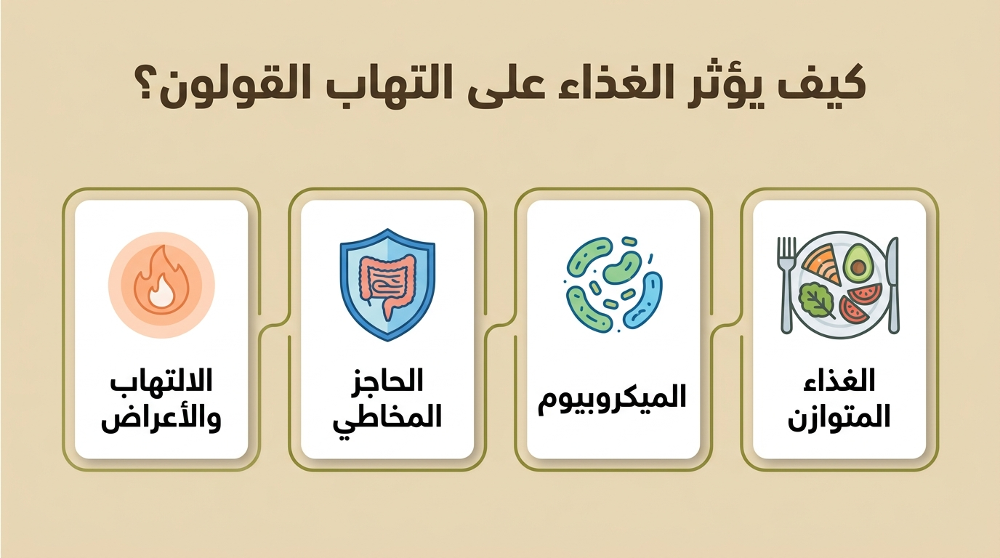
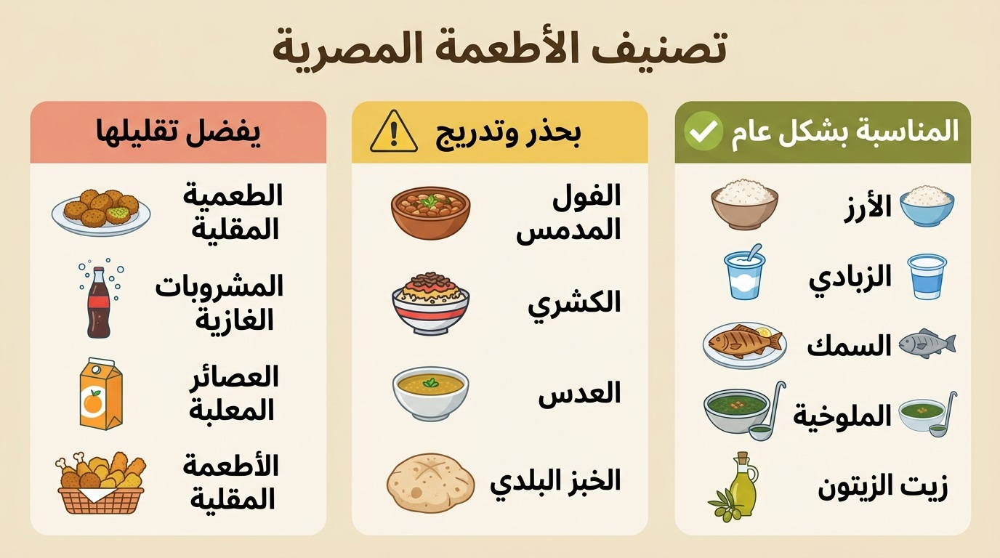
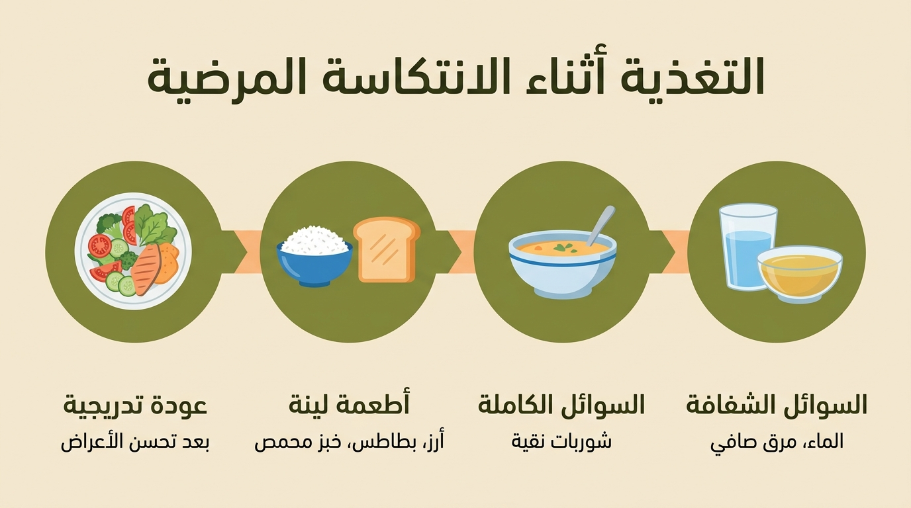
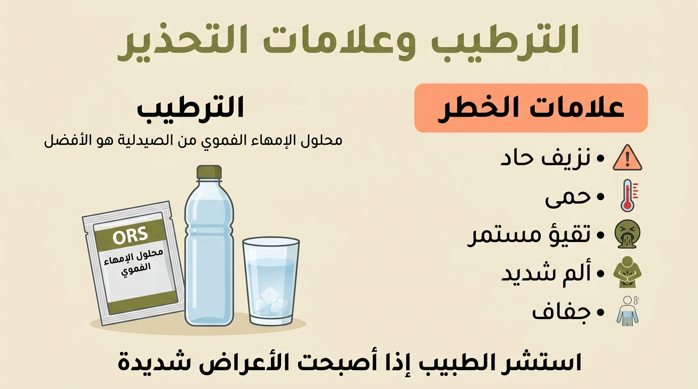
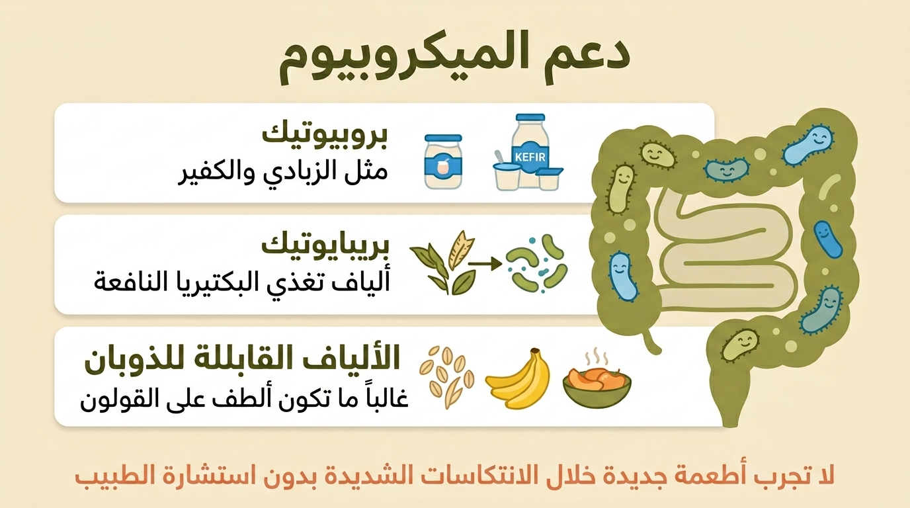
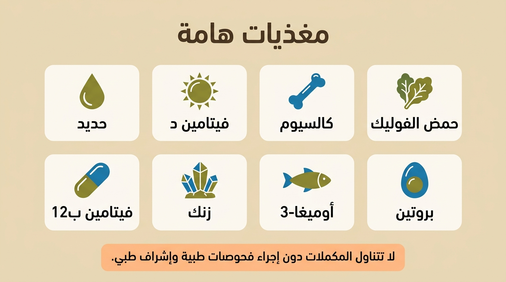
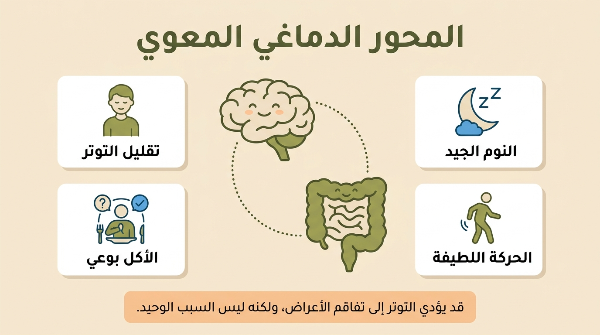

توصية فردية في الهدوء التام فقط وبكميات صغيرة، ويُفضل تناوله مقشراً (نابت مقشر) لتجنب الغازات الناتجة عن القشور.
الملخص التنفيذي
تنبيه علمي مهم:
الغذاء يدعم جودة الحياة، وقد يساعد في تخفيف بعض الأعراض وتحسين تحمل الطعام، لكنه لا يعالج التهاب القولون التقرحي،
ولا يضمن منع الانتكاسات أو إطالة الهدوء وحده. العلاج الدوائي والمتابعة الطبية يظلان أساس السيطرة على الالتهاب.
يهدف هذا الدليل لتوفير مرجع علمي وعملي وشامل للمريض المصري المصاب بالتهاب القولون التقرحي. يستعرض الدليل كيفية تأثير الغذاء على جدار الأمعاء والبكتيريا النافعة، ويقدم تصنيفاً تفصيلياً للأطعمة المصرية الشائعة بناءً على مدى ملاءمتها في فترتي "نشاط المرض" (الانتكاسة) و"الكمون" (الهدوء). يؤكد الدليل على أن الغذاء قد يدعم جودة الحياة ويساعد بعض المرضى في تخفيف الأعراض وتحسين تحمل الطعام، لكنه لا يعالج التهاب القولون التقرحي ولا يمنع الانتكاسات بشكل مضمون، ولا يُعد بديلاً عن العلاج الطبي. يتميز الدليل بتوضيح قوة الأدلة العلمية لكل توصية، مع خطط عملية ونصائح نفسية لضمان تلقي المريض معلومات دقيقة وآمنة وداعمة.
1. المقدمة: ما هو التهاب القولون التقرحي؟
ملخص القسم: التهاب القولون التقرحي هو مرض مناعي مزمن يصيب الأمعاء ويتميز بفترات من النشاط والكمون. تلعب التغذية دوراً داعماً ومحورياً في تحسين جودة الحياة وتقليل الأعراض، لكنها لا تغني أبداً عن الالتزام بالعلاج الطبي.
1.1 ما هو المرض؟
التهاب القولون التقرحي (Ulcerative Colitis) هو مرض مناعي مزمن يتسبب في حدوث التهابات وتقرحات سطحية متصلة في البطانة الداخلية للأمعاء الغليظة (القولون) والمستقيم. يتسم هذا المرض بمسار متأرجح؛ حيث يمر المريض بفترات تنشط فيها الأعراض وتُعرف بالانتكاسات (Flares)، تعقبها فترات من الهدوء وتراجع الأعراض تُعرف بالكمون (Remission).
1.2 أسباب المرض وتطوره
لا يوجد سبب واحد ومباشر للإصابة بالمرض. تشير الأدلة العلمية إلى أنه ينتج عن تفاعل معقد يجمع بين الاستعداد الوراثي، ووجود خلل في استجابة الجهاز المناعي، بالإضافة إلى محفزات بيئية مختلفة (Li et al., 2026). يؤدي هذا التفاعل إلى استجابة مناعية مفرطة تهاجم جدار القولون السليم.
1.3 علاقة التغذية بالمرض
يعد الغذاء أداة يومية داعمة ومهمة بيد المريض للمساعدة في إدارة مرضه جنباً إلى جنب مع علاجه الطبي. الأنظمة الغذائية الغربية المليئة بالأطعمة فائقة المعالجة، والدهون المشبعة، والسكريات، ترتبط بتغييرات سلبية في بيئة الأمعاء قد تساهم في تهيج الالتهابات (Herrador-López et al., 2023). وفي المقابل، قد تدعم التغذية السليمة المتوازنة جودة الغذاء وصحة الميكروبيوم وتحمل الطعام، لكنها لا تضمن إطالة فترات الهدوء أو منع الانتكاسات وحدها.
توصية داعمة التعديلات الغذائية تُعد تدخلاً داعماً يهدف إلى تحسين جودة الحياة وتخفيف العبء على الأمعاء، لكنها لا تعالج الالتهاب ولا تُعد بديلاً عن الأدوية والمتابعة الطبية (Hashash et al., 2024).
1.4 الأعراض الشائعة وتصنيف شدة المرض
تعريف التهاب القولون التقرحي الحاد الشديد ASUC:
يُقصد به غالبًا وجود 6 مرات أو أكثر من التبرز الدموي يوميًا مع علامة جهازية واحدة على الأقل، مثل:
حرارة أعلى من 37.8°م، نبض أكثر من 90/دقيقة، أنيميا أو هيموجلوبين أقل من 10.5 جم/دل، أو ارتفاع واضح في ESR/CRP.
أما الجفاف الشديد، القيء المستمر، الألم الشديد، الإغماء أو الضعف الشديد فهي علامات طوارئ مهمة، لكنها تُذكر كعلامات إنذار إضافية
ولا تُستخدم وحدها كتعريف صارم لـ ASUC.
ملخص القسم: تختلف أعراض التهاب القولون التقرحي من مريض لآخر حسب شدة الالتهاب وامتداده داخل القولون. يساعد فهم الأعراض ودرجات الشدة على معرفة متى يمكن الاكتفاء بالمتابعة العادية، ومتى يجب التواصل العاجل مع الطبيب.
الأعراض الأكثر شيوعاً في التهاب القولون التقرحي تشمل الإسهال، وجود دم أو مخاط مع البراز، الإلحاح الشديد لدخول الحمام، زيادة عدد مرات التبرز، ألم أو تقلصات أسفل البطن، الشعور بعدم اكتمال الإخراج، التعب العام، فقدان الشهية، ونقص الوزن في بعض الحالات. وقد تظهر أعراض خارج القولون مثل آلام المفاصل أو مشاكل الجلد أو العينين، وهي تحتاج دائماً لتقييم طبي متخصص.
ملاحظة: وجود عرض واحد لا يكفي لتحديد شدة المرض. تقييم الشدة يعتمد على عدد مرات التبرز، كمية الدم، درجة الحرارة، النبض، الأنيميا، دلالات الالتهاب، نتائج منظار القولون، ورأي الطبيب المعالج.
تقسيم شدة التهاب القولون التقرحي بصورة مبسطة
مرحلة الكمون أو الهدوء
الوصف: الأعراض غائبة أو محدودة جداً، ولا يوجد إسهال أو نزيف واضح.
المتابعة: الاستمرار على العلاج والمتابعة الدورية، وعدم إيقاف الدواء بسبب تحسن الأعراض.
التغذية: يناسبها غالباً نمط غذائي متوازن مثل حمية البحر الأبيض المتوسط مع مراعاة التحمل الشخصي.
نشاط خفيف
الأعراض المحتملة: أقل من 4 مرات تبرز يومياً غالباً، مع أو بدون كمية بسيطة من الدم، ودون حرارة أو إرهاق شديد.
ما يجب فعله: التواصل مع الطبيب إذا استمرت الأعراض أو زاد الدم، وعدم الاعتماد على تعديل الطعام وحده.
التغذية: تقليل المهيجات مؤقتاً، وطهي الخضروات جيداً، ومراقبة تحمل الألياف والبقوليات.
نشاط متوسط
الأعراض المحتملة: زيادة عدد مرات التبرز، وجود دم أو مخاط أو إلحاح واضح، مع مغص أو تعب يؤثر على النشاط اليومي.
ما يجب فعله: يحتاج إلى مراجعة الطبيب لتقييم نشاط الالتهاب والتحاليل وخطة العلاج.
التغذية: اختيار أطعمة أسهل في الهضم، وتقليل الألياف الخشنة والمقليات، والاهتمام بالسوائل.
نشاط شديد
الأعراض المحتملة: 6 مرات تبرز أو أكثر يومياً، دم واضح، ضعف شديد، ألم ملحوظ، أو علامات أنيميا أو التهاب عام.
ما يجب فعله: يجب التواصل مع الطبيب فوراً، وقد يحتاج المريض إلى تقييم عاجل.
التغذية: لا تكفي التغذية وحدها. الأولوية لتقييم الطبيب وتعويض السوائل والأملاح عند الحاجة.
التهاب قولون تقرحي حاد شديد
الأعراض التحذيرية: إسهال شديد متكرر مع نزيف واضح، حرارة، تسارع ضربات القلب، دوخة، جفاف، ألم شديد، قيء مستمر، أو ضعف شديد.
ما يجب فعله: هذه حالة تستدعي التوجه للطوارئ أو المستشفى فوراً، ولا يجوز التعامل معها بالغذاء أو السوائل المنزلية فقط.
التغذية: يتم تحديد التغذية والسوائل داخل الخطة الطبية حسب حالة المريض.
تنبيه مهم: هذا التصنيف للتثقيف فقط، وليس أداة تشخيص ذاتي. إذا ظهرت أعراض شديدة، أو نزيف متكرر، أو حرارة، أو دوخة، أو علامات جفاف، أو فقدان وزن سريع؛ يجب التواصل مع الطبيب أو التوجه للطوارئ فوراً.
يعتمد هذا التقسيم المبسط على مبادئ تقييم شدة التهاب القولون التقرحي المستخدمة في الإرشادات الطبية، ومنها معايير ترولوف وويتس، وإرشادات ECCO وAGA وNICE لتصنيف النشاط إلى خفيف ومتوسط وشديد.
1.5 أعراض خارج الجهاز الهضمي لا تهملها
ملخص القسم: التهاب القولون التقرحي لا يؤثر دائماً على القولون فقط. عند بعض المرضى قد تظهر أعراض في المفاصل، العين، الجلد، الفم، أو الدم. معرفة هذه العلامات تساعد المريض على طلب المساعدة في الوقت المناسب.
قد تظهر لدى بعض مرضى التهاب القولون التقرحي أعراض خارج الجهاز الهضمي، وتسمى أحياناً المظاهر خارج الأمعاء. لا يعني ظهورها بالضرورة وجود خطر فوري، لكنها تحتاج إلى الانتباه، خاصة إذا كانت شديدة أو متكررة أو ظهرت مع نشاط أعراض القولون.
آلام المفاصل
قد يشعر بعض المرضى بألم أو تيبس في المفاصل، خاصة الركبتين أو الكاحلين أو اليدين. إذا كان الألم شديداً أو مصحوباً بتورم، يجب إبلاغ الطبيب.
تقرحات الفم
قد تظهر قرح صغيرة مؤلمة داخل الفم، خصوصاً أثناء فترات نشاط المرض أو مع نقص بعض العناصر الغذائية.
أعراض العين
احمرار العين، ألم العين، الحساسية للضوء، أو زغللة النظر لا يجب تجاهلها، لأنها قد تحتاج إلى تقييم طبي سريع.
أعراض الجلد
قد تظهر طفح جلدي، تقرحات، أو كتل مؤلمة تحت الجلد. إذا كانت مؤلمة أو متزايدة أو مصحوبة بحرارة، يجب مراجعة الطبيب.
الإرهاق والأنيميا
التعب الشديد، الدوخة، ضيق النفس مع المجهود، أو شحوب الوجه قد تكون علامات على أنيميا أو نقص عناصر غذائية.
فقدان وزن غير مبرر
فقدان الوزن السريع أو غير المقصود قد يدل على نشاط المرض، سوء تغذية، أو نقص في الامتصاص، ويحتاج إلى متابعة.
تنبيه مهم: ألم أو احمرار العين مع زغللة، ألم مفصل شديد مع تورم، طفح جلدي مؤلم، فقدان وزن سريع، أو إرهاق شديد مستمر؛ كلها علامات تستدعي التواصل مع الطبيب وعدم الاكتفاء بتعديل الغذاء.
2. كيف يؤثر الغذاء على التهاب القولون؟
ملخص القسم: يتفاعل الغذاء بشكل مباشر مع البكتيريا النافعة وجدار الأمعاء. الخيارات الغذائية الصحية قد تدعم جودة الغذاء والميكروبيوم وتحمل الطعام، في حين أن الأطعمة فائقة المعالجة قد ترتبط بانخفاض جودة الغذاء وتهيج الأعراض لدى بعض المرضى.

الغذاء يؤثر في الميكروبيوم، والحاجز المخاطي، والاستجابة الالتهابية.
2.1 ميكروبيوم الأمعاء (Gut Microbiome)
يحتوي الجهاز الهضمي على تريليونات من الكائنات الدقيقة المفيدة التي تلعب دوراً حاسماً في الهضم وتنظيم المناعة. الأنماط الغذائية التي تفتقر إلى الألياف وتعتمد بكثافة على الأطعمة المصنعة تُحدث خللاً في توازن هذه البكتيريا، مما يقلل من تنوعها ويسمح بنمو سلالات قد ترتبط بتهيج الأعراض أو بنتائج أسوأ لدى بعض المرضى (Herrador-López et al., 2023).
2.2 الحاجز المخاطي (Mucosal Barrier)
يمكن تخيل البطانة الداخلية للقولون كـ "سور حماية" يمنع تسرب السموم إلى مجرى الدم. تعمل الألياف الغذائية القابلة للذوبان كغذاء للبكتيريا النافعة، التي تقوم بدورها بإنتاج أحماض دهنية قصيرة السلسلة تغذي وتقوي هذا السور (Li et al., 2026).
2.3 الاستجابة الالتهابية (Inflammatory Response)
تحتوي العديد من الأطعمة الحديثة على إضافات مثل المستحلبات الصناعية (Emulsifiers). تشير الأبحاث إلى أن هذه المواد قد تتفاعل سلباً مع حاجز الأمعاء، وقد ترتبط بتهيج حاجز الأمعاء لدى بعض المرضى (Hashash et al., 2024).
2.4 مثال عملي من المائدة المصرية
وجبة سريعة من الخبز الأبيض واللحوم المصنعة تفتقر للمغذيات وتُجهد الأمعاء. في المقابل، وجبة من الزبادي الطبيعي مع قليل من زيت الزيتون توفر بكتيريا نافعة ودهوناً صحية قد تكون أسهل تحملاً وتدعم جودة الغذاء دون اعتبارها علاجًا للقولون.
3. الأنظمة الغذائية المعتمدة علمياً
ملخص القسم: لا يوجد نظام غذائي واحد ثابت يناسب الجميع في كل المراحل. الجدول التالي يوضح الخيارات المدروسة علمياً، وكيفية توظيفها ومحاذيرها بشكل صحيح لمرضى التهاب القولون التقرحي.
3.1 حمية البحر الأبيض المتوسط: الأساس العملي في فترة الهدوء
قوة الدليل:
يُعرض نمط البحر المتوسط كنصيحة أفضل الممارسات ودعم للصحة العامة وجودة الغذاء، ومناسب غالبًا في فترة الكمون.
لكنه ليس علاجًا مباشرًا مثبتًا لإحداث الهدوء أو منع الانتكاسات وحده، ولا توجد حمية ثبت باستمرار أنها تقلل الانتكاسات لدى كل البالغين المصابين بـ IBD.
نصيحة أفضل الممارسات للصحة العامة (Hashash et al., 2024; Haskey et al., 2022; Herrador-López et al., 2023)
حمية البحر الأبيض المتوسط ليست قائمة جامدة، بل نمط غذائي متوازن يعتمد على زيت الزيتون، والخضروات، والفواكه، والأسماك، والحبوب، والبقوليات بقدر التحمل، مع تقليل اللحوم المصنعة والسكريات والأطعمة فائقة المعالجة. يناسب هذا النمط غالباً فترة الهدوء، لأنه يساعد على تنوع الغذاء ودعم الميكروبيوم وتقليل الاعتماد على الأطعمة المهيجة. ولا تُعد حمية البحر المتوسط علاجًا مباشرًا لإحداث الهدوء أو منع الانتكاسات وحدها.
في البيئة المصرية يمكن تطبيقه بصورة عملية من خلال: زيت الزيتون، السمك المشوي، الأرز أو الخبز البلدي حسب التحمل، الخضروات المطبوخة مثل الملوخية والكوسة والجزر، الزبادي الطبيعي، الجبن القريش، والفاكهة المقشرة عند الحاجة.
عند ظهور أعراض خفيفة يمكن تعديل الحمية دون إلغائها: تُطهى الخضروات جيداً، تُقشر الفاكهة، تُقلل البقوليات مؤقتاً، وتُستبدل المقليات بالأطعمة المشوية أو المسلوقة أو المطهية بالبخار.
ملاحظة: حمية البحر الأبيض المتوسط هي خيار عملي مناسب غالباً في فترة الهدوء، لكنها لا تُعد علاجاً مستقلاً، ولا تكفي وحدها أثناء الانتكاسة النشطة.
3.2 حمية الفودماب المنخفضة: للأعراض الوظيفية لا لعلاج الالتهاب
حمية Low-FODMAP:
الأدلة في مرضى IBD تُعد محدودة جدًا ومنخفضة الجودة، وتُستخدم أساسًا للأعراض الوظيفية مثل الغازات والانتفاخ
عند استبعاد النشاط الالتهابي. لا تعالج الالتهاب، ولا تشفي بطانة القولون، ولا يجب اتباعها طويلًا دون إشراف غذائي.
أدلة محدودة جدًا / Very low quality evidence للأعراض الوظيفية فقط (Peng et al., 2022)
الفودماب (FODMAP) هي أنواع من الكربوهيدرات قصيرة السلسلة التي قد تتخمر داخل الأمعاء وتسبب غازات وانتفاخاً وتقلصات لدى بعض المرضى. لذلك قد تساعد هذه الحمية في تخفيف الأعراض الوظيفية مثل الانتفاخ والغازات وعدم الارتياح، لكنها لا تُثبت التئام الغشاء المخاطي ولا تعالج الالتهاب نفسه، ولا يجب استخدامها كعلاج للالتهاب أو كوسيلة لشفاء بطانة القولون.
تُطبّق هذه الحمية على مراحل قصيرة ومنظمة: مرحلة تقليل مؤقتة، ثم إعادة إدخال تدريجية للأطعمة، ثم تخصيص النظام حسب التحمل الشخصي. لا يُنصح باتباعها لفترات طويلة دون إشراف لأنها قد تقلل تنوع الغذاء وتضعف تنوع الميكروبيوم وتزيد الخوف من الطعام.
أطعمة مصرية قد تُختبر بحذر: الفول، العدس، البصل، الثوم، الكشري، بعض الفواكه، والقمح لدى بعض المرضى. ومن الخيارات الأسهل غالباً: الأرز، البطاطس، الجزر المطبوخ، الكوسة المطبوخة، الموز الناضج، البيض، السمك، والدجاج.
تنبيه مهم: لا يُنصح باتباع أي حمية صارمة أو استبعاد مجموعات غذائية كاملة دون إشراف طبي أو تغذوي، خاصة أثناء الانتكاسة أو مع فقدان الوزن أو الأنيميا أو العلاج بالكورتيزون أو العلاج البيولوجي.
مقارنة الأنظمة الغذائية الرئيسية
يوضح الجدول التالي أبرز الأنظمة الغذائية المدروسة لمرضى التهاب القولون التقرحي، مع قوة الأدلة العلمية ومحاذيرها العملية. مرّر الجدول يميناً ويساراً على الهاتف لرؤية كل الأعمدة.
| النظام الغذائي | الفكرة الرئيسية | أفضل استخدام | قوة الأدلة | الملاءمة للمريض المصري | محاذير عملية |
|---|---|---|---|---|---|
| حمية البحر الأبيض المتوسط (Mediterranean Diet) |
زيت الزيتون، الخضروات، الفواكه، الأسماك، وتقليل اللحوم الحمراء والمصنعة. | فترة الكمون كنمط حياة صحي داعم، دون اعتباره ضمانًا لمنع الانتكاسات. | نصيحة أفضل الممارسات للصحة العامة (Hashash et al., 2024) |
ممتازة، تعتمد على مكونات متوفرة كالأسماك والزيتون. | قد تحتاج لتعديل قوام الخضروات النيئة إذا ظهرت أعراض. |
| الحمية المتوسطية المعدلة (Modified Mediterranean) |
نفس المبادئ، مع تعديل القوام (طهي الخضروات، هرسها، تقشير الفواكه). | الانتكاسات الخفيفة إلى المتوسطة، أو تضيق الأمعاء. | رأي الخبراء | مثالية للحد من الاحتكاك الجسدي بالقولون المتقرح. | تأكد من الطهي الجيد وتجنب القشور القاسية أثناء الانتكاسة. |
| نمط غذائي مقلل للمحفزات الالتهابية | تجنب الأطعمة فائقة المعالجة، والسكريات المضافة، والدهون المتحولة. | جميع المراحل، لتقليل محفزات الالتهاب. | قوية/متوسطة | تتطلب تقليل الاعتماد على الوجبات السريعة والمعلبات. | قد تحتاج وقتاً لتغيير العادات وتقليل الحلويات الجاهزة. |
| نهج الألياف القابلة للذوبان (Soluble fiber approach) |
الاعتماد على الألياف الناعمة (لب الفاكهة، الشوفان) وتجنب الخشنة. | الانتقال التدريجي من الانتكاسة نحو الهدوء. | دليل محدود/مشروط حسب الحالة (Halmos et al., 2024) |
جيد جداً باستخدام الفواكه المقشرة والشوفان. | يُحذر من الألياف غير القابلة للذوبان (البذور/القشور) أثناء النشاط. |
| حمية الفودماب (Low-FODMAP Diet) |
تقليل الكربوهيدرات القابلة للتخمر (البصل، الثوم، البقوليات). | قد تقلل أعراض الغازات والانتفاخ. | أدلة محدودة جدًا / Very low quality evidence للأعراض الوظيفية فقط (Peng et al., 2022) |
صعبة قليلاً لاعتمادنا على البصل والبقوليات. | تُستخدم مؤقتاً فقط للتحكم بالأعراض؛ لا تعالج الالتهاب وقد تضر الميكروبيوم إذا طالت. |
| التغذية المعوية الحصرية (Exclusive Enteral Nutrition) |
تركيبات طبية سائلة سهلة الامتصاص. | حالات سوء التغذية الشديدة أو التحضير للجراحة. | ليست علاجًا روتينيًا في UC دليلها أقوى في داء كرون، خاصة الأطفال (Chu et al., 2025) |
يتم توفيرها تحت إشراف طبي بالمستشفيات. | ليست علاجاً أساسياً للمرضى المستقرين؛ تُستخدم طبياً. |
| حمية الكربوهيدرات المحددة (SCD) |
المنع الصارم لجميع الحبوب المعقدة والنشويات والسكريات. | يُفضل عدم الاعتماد عليها كبديل للعلاج. | أدلة محدودة (Abbas et al., 2023) |
قاسية لتعارضها مع الاعتماد على الأرز والخبز. | قاسية جداً، قد تسبب سوء التغذية، ولم يثبت تفوقها علمياً على الغذاء الصحي. |
حمية البحر الأبيض المتوسط (Mediterranean Diet)
الفكرة الرئيسية: زيت الزيتون، الخضروات، الفواكه، الأسماك، وتقليل اللحوم الحمراء والمصنعة.
أفضل استخدام: فترة الكمون كنمط حياة صحي داعم، دون اعتباره ضمانًا لمنع الانتكاسات.
قوة الدليل: نصيحة أفضل الممارسات للصحة العامة — (Hashash et al., 2024)
الملاءمة للمريض المصري: ممتازة، تعتمد على مكونات متوفرة كالأسماك والزيتون.
محاذير عملية: قد تحتاج لتعديل قوام الخضروات النيئة إذا ظهرت أعراض.
الحمية المتوسطية المعدلة (Modified Mediterranean)
الفكرة الرئيسية: نفس المبادئ، مع تعديل القوام (طهي الخضروات، هرسها، تقشير الفواكه).
أفضل استخدام: الانتكاسات الخفيفة إلى المتوسطة، أو تضيق الأمعاء.
قوة الأدلة: رأي الخبراء
الملاءمة للمريض المصري: مثالية للحد من الاحتكاك الجسدي بالقولون المتقرح.
محاذير عملية: تأكد من الطهي الجيد وتجنب القشور القاسية أثناء الانتكاسة.
نمط غذائي مقلل للمحفزات الالتهابية
الفكرة الرئيسية: تجنب الأطعمة فائقة المعالجة، والسكريات المضافة، والدهون المتحولة.
أفضل استخدام: جميع المراحل، لتقليل محفزات الالتهاب.
قوة الأدلة: قوية/متوسطة
الملاءمة للمريض المصري: تتطلب تقليل الاعتماد على الوجبات السريعة والمعلبات.
محاذير عملية: قد تحتاج وقتاً لتغيير العادات وتقليل الحلويات الجاهزة.
نهج الألياف القابلة للذوبان (Soluble Fiber Approach)
الفكرة الرئيسية: الاعتماد على الألياف الناعمة (لب الفاكهة، الشوفان) وتجنب الخشنة.
أفضل استخدام: الانتقال التدريجي من الانتكاسة نحو الهدوء.
قوة الدليل: دليل محدود/مشروط ويُطبّق حسب الحالة — (Halmos et al., 2024)
الملاءمة للمريض المصري: جيد جداً باستخدام الفواكه المقشرة والشوفان.
محاذير عملية: يُحذر من الألياف غير القابلة للذوبان (البذور/القشور) أثناء النشاط.
حمية الفودماب (Low-FODMAP Diet)
الفكرة الرئيسية: تقليل الكربوهيدرات القابلة للتخمر (البصل، الثوم، البقوليات).
أفضل استخدام: قد تقلل أعراض الغازات والانتفاخ.
قوة الدليل: أدلة محدودة جدًا / Very low quality evidence للأعراض الوظيفية فقط — (Peng et al., 2022)
الملاءمة للمريض المصري: صعبة قليلاً لاعتمادنا على البصل والبقوليات.
محاذير عملية: تُستخدم مؤقتاً فقط للتحكم بالأعراض؛ لا تعالج الالتهاب وقد تضر الميكروبيوم إذا طالت.
التغذية المعوية الحصرية (Exclusive Enteral Nutrition)
الفكرة الرئيسية: تركيبات طبية سائلة سهلة الامتصاص.
أفضل استخدام: حالات سوء التغذية الشديدة أو التحضير للجراحة.
قوة الدليل: ليست علاجًا روتينيًا لإحداث الهدوء في UC؛ دليلها أقوى في داء كرون، خاصة الأطفال — (Chu et al., 2025)
الملاءمة للمريض المصري: يتم توفيرها تحت إشراف طبي بالمستشفيات.
محاذير عملية: ليست علاجاً أساسياً للمرضى المستقرين؛ تُستخدم طبياً.
حمية الكربوهيدرات المحددة (SCD)
الفكرة الرئيسية: المنع الصارم لجميع الحبوب المعقدة والنشويات والسكريات.
أفضل استخدام: يُفضل عدم الاعتماد عليها كبديل للعلاج.
قوة الأدلة: أدلة محدودة — (Abbas et al., 2023)
الملاءمة للمريض المصري: قاسية لتعارضها مع الاعتماد على الأرز والخبز.
محاذير عملية: قاسية جداً، قد تسبب سوء التغذية، ولم يثبت تفوقها علمياً على الغذاء الصحي.
4. الأطعمة المسموح بها والتي تُستخدم بحذر والتي يُفضّل تجنبها
ملخص القسم: تطبيق التوصيات العلمية على الأطعمة المصرية اليومية يساعد في اتخاذ قرارات واقعية.
ملاحظة: التوصيات في هذا الجدول مبنية غالباً على رأي الخبراء والممارسة الإكلينيكية عبر تطبيق القواعد العلمية المتعلقة بقوام الألياف، ومحتوى الدهون، ومستويات الفودماب على الأطعمة المحلية (Hashash et al., 2024; Herrador-López et al., 2023; Peng et al., 2022).

تصنيف بصري مبسط للأطعمة المصرية حسب درجة الملاءمة.
| فئة الطعام | الصنف المصري | أفضل مرحلة للتناول | سبب التوصية وطريقة التحضير المثلى |
|---|---|---|---|
| مناسب: مفيدة وجيدة التحمل | الخبز البلدي | فترة الكمون (الهدوء) | غني بالألياف المفيدة أثناء الهدوء. في الانتكاسات الشديدة، قد يكون التوست الأبيض أسهل هضماً ومؤقتاً. |
| مناسب: مفيدة وجيدة التحمل | الملوخية | جميع المراحل | خضار مطبوخ وناعم (ألياف ذائبة). تختلف القدرة على تحملها؛ يُفضل طهيها بدهون قليلة وتقليل الثوم جداً. |
| مناسب: مفيدة وجيدة التحمل | الأرز الأبيض | الانتكاسة والهدوء | طعام قليل الفضلات (Low-residue) وأسهل في الهضم لإراحة الأمعاء وقت النشاط والإسهال. |
| مناسب: مفيدة وجيدة التحمل | شوربة صافية منزلية منزوعة الدسم | فترات الانتكاسة | يجب أن يكون مرقاً منزوع الدهن (شوربة صافية). يوفر سوائل مغذية بأحماض أمينية لقولون متهيج. |
| مناسب: مفيدة وجيدة التحمل | الزبادي والجبن القريش | جميع المراحل | غالباً جيد التحمل ومصدر للكالسيوم والبروبيوتيك طبيعي. (يُستبعد في حالة عدم تحمل اللاكتوز المؤكدة). |
| مناسب: مفيدة وجيدة التحمل | الزيتون وزيت الزيتون | جميع المراحل | دهون صحية مرتبطة بنمط غذائي مقلل للمحفزات الالتهابية. يُغسل الزيتون المخلل جيداً من الملح لتجنب احتباس السوائل. |
| مناسب: مفيدة وجيدة التحمل | الكبدة | جميع المراحل | تساعد في تعويض نقص الحديد. تُسوى بالشوي أو التشويح الخفيف بزيت الزيتون ويُفضل تجنبها مقلية. تُؤكل مطهية جيداً وباعتدال، خاصة لمن يستخدمون علاجاً بيولوجياً أو كورتيزوناً. ولا يُنصح بالإفراط في تناولها أو تناولها يومياً. |
| بحذر: تؤخذ بحذر وبالتدرج | الفول المدمس | فترة الكمون | قشرته خشنة وقد تسبب غازات. يُنصح بتناوله مقشراً (نابت مقشر) أو مضروباً في الخلاط وتجربة كميات صغيرة. |
| بحذر: تؤخذ بحذر وبالتدرج | الكشري | فترة الكمون الممتد | وجبة ثقيلة وبقوليات. يُؤكل بحذر في فترات الهدوء التام، ويُفضل إعداده بنسخة خفيفة (تقليل العدس والصلصة). |
| بحذر: تؤخذ بحذر وبالتدرج | العدس والبسلة | فترة الكمون | بقوليات مفيدة لكنها قد تزيد الغازات. تُهرس جيداً (كشوربة العدس) وتُتجنب أثناء الانتكاسات. |
| بحذر: تؤخذ بحذر وبالتدرج | مشروب التمر هندي | فترة الكمون | مقبول في فترة الهدوء إذا حُضّر منزلياً بسكر قليل ولم يسبب أعراضاً لدى الشخص نفسه. لا يوجد دليل علمي خاص على فائدته لعلاج التهاب القولون التقرحي. |
| يُفضّل تجنبه: يُفضّل تقليلها أو تجنبها | الطعمية (الفلافل) | أوقات الانتكاسات | القلي العميق في زيوت عالية الحرارة وتخمر البقوليات قد يهيجان الأمعاء المتقرحة بشدة. |
| يُفضّل تجنبه: يُفضّل تقليلها أو تجنبها | السمن البلدي / الزبدة | يُفضل التقليل دائماً | الإسراف في الدهون المشبعة قد يرتبط بنمط غذائي أقل ملاءمة. يُنصح باستبدالها تدريجياً بزيت الزيتون. |
| يُفضّل تجنبه: يُفضّل تقليلها أو تجنبها | العصائر المعلبة والمشروبات الغازية | يُنصح بشدة بتجنبها | السكريات المضافة والمستحلبات ترتبط بنمط غذائي غير ملائم وقد تفاقم الأعراض وتضر الميكروبيوم. |
مناسب: الخبز البلدي
التصنيف: مفيدة وجيدة التحمل
أفضل مرحلة: فترة الكمون (الهدوء)
التوصية: غني بالألياف المفيدة أثناء الهدوء. في الانتكاسات الشديدة، قد يكون التوست الأبيض أسهل هضماً ومؤقتاً.
مناسب: الملوخية
التصنيف: مفيدة وجيدة التحمل
أفضل مرحلة: جميع المراحل
التوصية: خضار مطبوخ وناعم (ألياف ذائبة). تختلف القدرة على تحملها؛ يُفضل طهيها بدهون قليلة وتقليل الثوم جداً.
مناسب: الأرز الأبيض
التصنيف: مفيدة وجيدة التحمل
أفضل مرحلة: الانتكاسة والهدوء
التوصية: طعام قليل الفضلات وأسهل في الهضم لإراحة الأمعاء وقت النشاط والإسهال.
مناسب: شوربة صافية منزلية منزوعة الدسم
التصنيف: مفيدة وجيدة التحمل
أفضل مرحلة: فترات الانتكاسة
التوصية: يجب أن يكون مرقاً منزوع الدهن (شوربة صافية). يوفر سوائل مغذية بأحماض أمينية لقولون متهيج.
مناسب: الزبادي والجبن القريش
التصنيف: مفيدة وجيدة التحمل
أفضل مرحلة: جميع المراحل
التوصية: غالباً جيد التحمل ومصدر للكالسيوم والبروبيوتيك طبيعي. (يُستبعد في حالة عدم تحمل اللاكتوز المؤكدة).
مناسب: الزيتون وزيت الزيتون
التصنيف: مفيدة وجيدة التحمل
أفضل مرحلة: جميع المراحل
التوصية: دهون صحية مرتبطة بنمط غذائي مقلل للمحفزات الالتهابية. يُغسل الزيتون المخلل جيداً من الملح.
مناسب: الكبدة
التصنيف: مفيدة وجيدة التحمل
أفضل مرحلة: جميع المراحل
التوصية: تساعد في تعويض نقص الحديد. تُسوى بالشوي أو التشويح الخفيف بزيت الزيتون ويُفضل تجنبها مقلية.
بحذر: الفول المدمس
التصنيف: تؤخذ بحذر وبالتدرج
أفضل مرحلة: فترة الكمون
التوصية: قشرته خشنة وقد تسبب غازات. يُنصح بتناوله مقشراً أو مضروباً في الخلاط وتجربة كميات صغيرة.
بحذر: الكشري
التصنيف: تؤخذ بحذر وبالتدرج
أفضل مرحلة: فترة الكمون الممتد
التوصية: وجبة ثقيلة وبقوليات. يُؤكل بحذر في فترات الهدوء التام، ويُفضل إعداده بنسخة خفيفة.
بحذر: العدس والبسلة
التصنيف: تؤخذ بحذر وبالتدرج
أفضل مرحلة: فترة الكمون
التوصية: بقوليات مفيدة لكنها قد تزيد الغازات. تُهرس جيداً (كشوربة العدس) وتُتجنب أثناء الانتكاسات.
بحذر: مشروب التمر هندي
التصنيف: تؤخذ بحذر وبالتدرج
أفضل مرحلة: فترة الكمون
التوصية: مقبول في فترة الهدوء إذا حُضّر منزلياً بسكر قليل ولم يسبب أعراضاً.
يُفضّل تجنبه: الطعمية (الفلافل)
التصنيف: يُفضّل تقليلها أو تجنبها
أفضل مرحلة: تجنب خاصة أثناء الانتكاسات
التوصية: القلي العميق في زيوت عالية الحرارة وتخمر البقوليات قد يهيجان الأمعاء المتقرحة بشدة.
يُفضّل تجنبه: السمن البلدي / الزبدة
التصنيف: يُفضّل تقليلها أو تجنبها
أفضل مرحلة: يُفضل التقليل دائماً
التوصية: الإسراف في الدهون المشبعة قد يرتبط بنمط غذائي أقل ملاءمة. يُنصح باستبدالها بزيت الزيتون.
يُفضّل تجنبه: العصائر المعلبة والمشروبات الغازية
التصنيف: يُفضّل تقليلها أو تجنبها
أفضل مرحلة: يُنصح بشدة بتجنبها
التوصية: السكريات المضافة والمستحلبات ترتبط بنمط غذائي غير ملائم وقد تفاقم الأعراض وتضر الميكروبيوم.
كيف تختبر تحملك للطعام؟
استجابة القولون تختلف من مريض لآخر. لضمان سلامتك:
- جرّب صنفاً واحداً جديداً في كل مرة: لتحديد السبب إذا حدث تعب.
- ابدأ بكميات صغيرة جداً: تناول ملعقة أو ملعقتين، وانتظر 24 ساعة.
- دوّن يومياتك الغذائية: اكتب ما تأكله والأعراض التي تشعر بها.
- تجنب التجارب أثناء الانتكاسات الشديدة: التزم بالأطعمة المريحة والآمنة التي اعتدت عليها.
- ناقش الأعراض المتكررة: استشر أخصائي التغذية لإيجاد بدائل غذائية تعوضك.
تنبيه مهم:
إذا أدى تناول طعام إلى تكرار النزيف، أو إسهال شديد ومتكرر، أو حمى، أو ألم حاد في البطن؛ يجب التوقف فوراً عن محاولات التعديل الغذائي والتوجه للتقييم الطبي العاجل.
5. التغذية في فترة الانتكاس
ملخص القسم: خلال فترة نشاط المرض، يكون القولون ملتهباً، مما يتطلب تقليل العبء الهضمي مؤقتاً بأطعمة سهلة الهضم، والسوائل للمساعدة في تعويض الجفاف، مع التدرج في إدخال الطعام عند تحسن الحالة.

التدرج الغذائي أثناء الانتكاسة يساعد على تقليل العبء على الأمعاء.
5.1 ماذا يحدث للقولون أثناء الانتكاسة؟
أثناء الانتكاسة:
الأطعمة اللينة والسوائل قد تكون مفيدة مؤقتًا في الأعراض الخفيفة أو أثناء انتظار التواصل مع الطبيب.
لا يجب فهم ذلك كخطة منزلية لعلاج الانتكاسة المتوسطة أو الشديدة. النزيف المتكرر، الحرارة، الجفاف، تسارع النبض،
الضعف الشديد، القيء المستمر، الدوخة أو الألم الشديد علامات تستدعي تقييمًا طبيًا عاجلًا.
تتزايد التقرحات، مما قد يفقد البطانة القدرة على امتصاص الماء ويسبب الإسهال. الألياف غير القابلة للذوبان تزيد الاحتكاك، لذا يُنصح المريض مؤقتاً بنظام غذائي قليل الفضلات (Low-residue diet) للمساعدة في إراحة الأمعاء (Raine et al., 2021).
5.2 التدرج في إدخال الطعام (Stepwise Reintroduction)
نصيحة أفضل الممارسات للصحة العامة (Hashash et al., 2024)
1. سوائل شفافة
(ماء، مرق صافي)
(ماء، مرق صافي)
2. سوائل كاملة
(شوربات مهروسة)
(شوربات مهروسة)
3. أطعمة لينة
(مطبوخة وسهلة المضغ)
(مطبوخة وسهلة المضغ)
4. عودة تدريجية
(عند توقف الإسهال)
(عند توقف الإسهال)
5.3 أطعمة يُنصح بها في أول 48–72 ساعة من الانتكاسة الشديدة:
مهم:
في بداية الأعراض أو أثناء الأعراض الخفيفة إلى المتوسطة، وحتى التواصل مع الطبيب، يمكن مؤقتًا اختيار أطعمة سهلة الهضم وسوائل مناسبة.
أما النزيف الشديد، الحرارة، الجفاف، القيء المستمر، الدوخة الشديدة، انقطاع البول، أو الألم الشديد فهي علامات إنذار وتحتاج تقييمًا طبيًا عاجلًا، ولا يجب التعامل معها كحالة غذائية منزلية فقط.
- مرق دجاج/لحم منزوع الدسم.
- أرز أبيض مسلوق.
- توست أبيض أو لباب الفينو.
- بطاطس مهروسة (بدون زبدة أو حليب كامل).
- زبادي قليل الدسم (إذا كان مقبولاً).
- موز ناضج ومهروس.

الترطيب وملاحظة علامات الخطر جزء أساسي من التعامل مع الانتكاسات.
5.4 تعويض السوائل (Oral Rehydration Therapy)
ملاحظة: يُفضّل دائماً استخدام أكياس محلول معالجة الجفاف الطبية من الصيدلية لأنها تحتوي على توازن أدق من الأملاح والجلوكوز. وفي حال عدم توافرها مؤقتاً، يمكن الاكتفاء بسوائل آمنة للحالات البسيطة جداً فقط، مثل الماء والشوربة الصافية، مع عدم الاعتماد على وصفات منزلية عند وجود إسهال شديد أو قيء مستمر أو علامات جفاف أو استخدام الكورتيزون. في هذه الحالات يجب التواصل مع الطبيب أو التوجه للطوارئ فوراً.
قد يزيد الإسهال الشديد أو استخدام الكورتيزون من خطر اضطراب الأملاح، لذلك لا يُنصح بالاعتماد على محلول منزلي غير طبي في هذه الحالات.
قد يزيد الإسهال الشديد أو استخدام الكورتيزون من خطر اضطراب الأملاح، لذلك لا يُنصح بالاعتماد على محلول منزلي غير طبي في هذه الحالات.
تنبيه مهم: مرضى الكلى، الفشل القلبي، ارتفاع ضغط الدم غير المنتظم، أو من يعانون من جفاف شديد، يجب عليهم استشارة الطبيب أو التوجه للطوارئ فوراً وعدم الاعتماد على المحاليل المنزلية.
5.5 أطعمة يُفضل تجنبها أثناء الانتكاسة:
الخضروات النيئة، القشور والبذور، البقوليات، الأطعمة المقلية، المشروبات الغازية، والأطعمة الحارة.
5.6 العلامات التحذيرية الحمراء التي تتطلب رعاية طبية عاجلة:
التغذية وحدها لا تكفي. توجه للمستشفى فوراً إذا ظهرت:
- نزيف شرجي كثيف.
- حمى (ارتفاع الحرارة).
- ألم حاد وشديد في البطن.
- قيء مستمر.
- علامات الجفاف مثل جفاف الفم، بول داكن أو قلة التبول، دوخة عند الوقوف، ضعف شديد، أو انقطاع البول لأكثر من ٨ ساعات.
- فقدان وزن سريع.
- دوار أو إغماء.
- إسهال شديد لا يتوقف.
5.7 ماذا أفعل عند بداية الانتكاسة؟
ملاحظة: هذه الخطوات لا تعالج الانتكاسة وحدها، لكنها تساعدك على التصرف بأمان حتى تتواصل مع طبيبك. لا توقف الدواء ولا تغيّر الجرعات من نفسك.
1. راقب الأعراض
دوّن عدد مرات التبرز، وجود الدم أو المخاط، درجة الألم، الحرارة، الشهية، وكمية السوائل التي تتناولها.
2. عدّل الطعام مؤقتاً
قلل الألياف الخشنة، البقوليات، المقليات، الأطعمة الحارة، والمشروبات الغازية. اختر أطعمة لينة وسهلة الهضم مثل الأرز، البطاطس المهروسة، الشوربة الصافية، التوست، والموز الناضج.
3. اهتم بالسوائل
اشرب الماء والسوائل الآمنة، واستخدم محلول الجفاف من الصيدلية عند الحاجة. لا تعتمد على وصفات منزلية عند وجود إسهال شديد، قيء، علامات جفاف، أو استخدام الكورتيزون.
4. لا توقف الدواء من نفسك
لا توقف أدوية القولون أو تغيّر جرعاتها دون الرجوع للطبيب، حتى لو ظننت أن الطعام هو السبب الرئيسي للأعراض.
5. تواصل مع الطبيب
إذا استمرت الأعراض أكثر من يومين، أو زاد الدم، أو تكرر الإسهال، أو ظهر تعب واضح، تواصل مع طبيب الجهاز الهضمي لتقييم الحالة.
6. اذهب للطوارئ عند علامات الخطر
اذهب للطوارئ فوراً عند نزيف شديد، حرارة، قيء مستمر، ألم شديد، دوخة، إغماء، جفاف، ضعف شديد، أو انقطاع البول لأكثر من ٨ ساعات.
6. دليل التعامل مع الحساسيات والتعذرات الغذائية
ملخص القسم: من الضروري التفريق بين حساسية الطعام الحقيقية التي تثير المناعة، وعدم تحمل الطعام الذي يسبب غازات. يُنصح بتجنب حميات المنع القاسية العشوائية.
6.1 الحساسية الحقيقية مقابل عدم التحمل
حساسية الطعام (True food allergy) تفاعل مناعي خطر، وهي غير شائعة كمسبب رئيسي لأعراض القولون التقرحي. أما عدم التحمل (Food intolerance) فهو صعوبة في الهضم تنتج غازات تحاكي الأعراض لكنها لا تسبب تقرحات جديدة في القولون.
6.2 عدم تحمل اللاكتوز (Lactose Intolerance)
- الأعراض: غازات وإسهال ملحوظ بعد شرب الحليب.
- التوصية: الزبادي والجبن القريش غالباً أسهل في الهضم لاحتوائهما على بكتيريا تساعد في هضم اللاكتوز. يمكن استخدام حليب خالي اللاكتوز. لا تُقلل أو تمنع منتجات الألبان كلياً بدون تشخيص موكّد لعدم تحمل اللاكتوز، لأن حذفها قد يُعرّضك لنقص الكالسيوم وضعف العظام مع مرور الوقت (Kreienbuehl et al., 2024).
6.3 عدم تحمل الجلوتين والداء الزلاقي (Celiac Disease)
توصية طبية لا يُنصح باتباع حمية خالية من الجلوتين بشكل روتيني إلا إذا تم تشخيصك طبياً بالداء الزلاقي. بدائل الجلوتين الصحية (إن لزم الأمر): الأرز، البطاطس، الذرة، الشوفان المعتمد الخالي من الجلوتين (Roncoroni et al., 2022).
6.4 حساسية البيض
يمكن استخدام الدواجن والأسماك كمصادر بروتين بديلة ومريحة.
6.5 التعامل مع البقوليات (Legume intolerance)
انقعها طويلاً، تخلص من ماء النقع، تخلص من القشور (استخدم النابت المقشر)، واهرسها جيداً لتسهيل هضمها.
6.6 حساسية المكسرات والصويا
لا تمنعها إلا إذا ثبت طبياً إصابتك بحساسية تجاهها أو كانت تسبب لك أعراضاً واضحة.
تنبيه مهم:
تحذير سلامة مهم يُحذر بشدة من اتباع حميات الاستبعاد العشوائية (Broad elimination diets) التي تمنع مجموعات غذائية كاملة بدون إشراف متخصص، فقد تؤدي لسوء التغذية وتضر بالصحة العامة (Peng et al., 2022).
7. التغذية المدعمة للميكروبيوم
ملخص القسم: الأمعاء الصحية تعتمد على مجتمع بكتيري متنوع. دعم هذا التنوع بالبكتيريا النافعة (الالبروبيوتيك) والألياف المغذية لها (الالبريبيوتيك) قد يساعد في حماية الجدار.

دعم الميكروبيوم يعتمد على التنوع الغذائي والألياف المناسبة.
7.1 التنوع الميكروبي (Microbial Diversity) والأحماض الدهنية
تغذية البكتيريا النافعة يحفزها على إفراز مواد نافعة تسمى الأحماض الدهنية قصيرة السلسلة (Short-chain fatty acids)، وهي غذاء مفضل لخلايا القولون للمساعدة في التجدد وتقليل مؤشرات الالتهاب (Li et al., 2026).
7.2 الأطعمة الداعمة للبكتيريا (الالبروبيوتيك)
الزبادي الطبيعي، والكفير إن توفر، أو الزبادي الطبيعي واللبن الرايب الموثوق. يُنصح بتجنب المخللات التقليدية لاحتوائها على ملح عالٍ واحتمالية تلوثها، وتُتجنب أثناء الانتكاسة.
7.3 الأطعمة المغذية للبكتيريا (الالبريبيوتيك - الألياف)
الألياف أثناء الانتكاسة:
لا يجب الخوف من كل الألياف. قد يتحمل بعض المرضى الألياف الذائبة سهلة الهضم مثل الشوفان، الموز، البطاطس بدون قشر،
والتفاح المقشر. أما الألياف الخشنة غير الذائبة مثل القشور، البذور، الخضار النيء والحبوب الخشنة فقد تزيد الأعراض مؤقتًا.
تقليل الألياف الخشنة يكون لفترة قصيرة أثناء الأعراض، ثم تُعاد تدريجيًا حسب التحمل.
- الألياف القابلة للذوبان (Soluble fiber): كالشوفان والفواكه المطبوخة والمقشرة.
- البصل والثوم والبقوليات: تُستهلك فقط في مرحلة الكمون وبكميات تتزايد تدريجياً لتجنب الغازات.
7.4 المكملات الحيوية (Commercial Probiotics)
دليل محدود/يعتمد على السلالة والحالة قد تفيد بعض التركيبات متعددة السلالات المحددة في حالات مختارة كعلاج مساعد فقط، وقد تفيد تركيبات معينة في حالات التهاب الجيبة بعد الجراحة. لا توجد توصية عامة باستخدام أي بروبيوتيك لكل المرضى، ويجب اختيار النوع والجرعة بمعرفة الطبيب أو أخصائي الجهاز الهضمي (Sood et al., 2009; Mimura et al., 2004).
تنبيه مهم وقت الانتكاسات والمناعة الضعيفة:
لا تقم بتجربة أطعمة متخمرة جديدة أو زيادة الألياف، أو تناول البروبيوتيك من تلقاء نفسك أثناء الانتكاسة الشديدة أو إذا كنت تتناول أدوية مثبطة للمناعة دون استشارة طبية.
7.5 الأعشاب والعلاجات الشعبية: ما تقوله العلوم
يلجأ كثير من مرضى القولون التقرحي إلى الأعشاب والعلاجات الشعبية، خاصة في البيئة المصرية حيث تنتشر توصيات من الصيدلية أو العائلة أو الإنترنت. بعض هذه العلاجات له قاعدة بحثية أولية، وبعضها قد يتعارض مع الأدوية الموصوفة أو يُفاقم الأعراض. هذا القسم يضع الصورة الصادقة أمامك.
تنبيه مهم قبل القراءة: أخبر طبيبك بأي عشبة أو مكمل تستخدمه حتى لو بدا طبيعياً. بعض الأعشاب تتفاعل مع أدوية UC وبعضها يُضعف مفعولها. لا تستبدل أي دواء موصوف بعشبة بناءً على هذا الدليل.
| العشبة أو العلاج | ما تقوله الأبحاث | التصنيف | ملاحظة للمريض المصري |
|---|---|---|---|
| كركمين (كركم) Curcumin |
دراسات أولية إيجابية في UC الخفيف كمضاف للعلاج الدوائي — لا يُغني عن الدواء | دليل أولي | الكركم في الطعام آمن. مكملات الكركمين تحتاج موافقة طبيبك، خاصة مع مُخففات الدم. |
| بذور الكتان Flaxseed |
مصدر ألياف ذائبة وأوميجا 3 — دليل غير مباشر من فوائد الألياف الذائبة | مقبول | كمية صغيرة (ملعقة صغيرة مطحونة مع الطعام) في مرحلة الهدوء — تجنّبي أثناء الانتكاسة. |
| حلبة Fenugreek |
دليل محدود جداً في IBD — قد تزيد الإسهال لدى بعض المرضى | بحذر | شائعة جداً في مصر كمشروب أو بذور. تجنّبي أثناء الانتكاسة. اسأل طبيبك قبل الاستمرار. |
| الزنجبيل Ginger |
خصائص مضادة للالتهاب في المختبر — أدلة سريرية محدودة في UC تحديداً | مقبول باعتدال | في الطعام آمن وقد يساعد على تهدئة الغثيان. المكملات بجرعات عالية تحتاج استشارة. |
| ألوفيرا / صبّار Aloe vera |
دراسات مبدئية جداً — الجل له تأثير مُلين قد يُفاقم الإسهال | يُحذر منه | لا تتناوله كمشروب أثناء الانتكاسة. مرهم خارجي للجلد غير معني بهذه التحذير. |
| عرق السوس Liquorice root |
قد يرفع ضغط الدم ويؤثر على مستوى الكورتيزول — لا دليل سريري في UC | غير مُنصح | خاصة مع الكورتيزون — تأثيرات هرمونية متداخلة. تجنّب تماماً حتى تستشير طبيبك. |
| زيت الحبة السوداء Black seed oil |
دراسات مبدئية، لا توصية سريرية في IBD حتى الآن | غير مُثبت | شائع جداً في مصر. لا ضرر واضح بكميات صغيرة في الطعام، لكن لا تعتمد عليه علاجاً. |
قاعدة عملية: إذا كنت تستخدم أي عشبة أو مكمل طبيعي، اكتبه في قائمة صغيرة وأحضرها معك لزيارتك القادمة للطبيب. التفاعلات الدوائية قد تكون غير متوقعة، وصدق الطبيب في هذا الأمر لمصلحتك.
8. العناصر الغذائية الحرجة والمكملات الغذائية
ملخص القسم: مرضى القولون التقرحي عُرضة لنقص الفيتامينات والمعادن نتيجة النزيف المستمر وضعف الامتصاص. التعويض السليم قد يساعد في الحماية من الأنيميا وهشاشة العظام.

عناصر غذائية مهمة يجب متابعتها بالتحاليل عند الحاجة.
| العنصر | سبب النقص والمخاوف | مصادر من المائدة المصرية | متى نلجأ للمكملات؟ (قوة الدليل) |
|---|---|---|---|
| الحديد | النزيف المستمر يسبب الإرهاق والأنيميا. | الكبدة (مطهية جيداً وباعتدال ولا يُفرط فيها)، اللحوم (باعتدال)، البيض. | توصية علاجية عند تأكيد الأنيميا قد يناسب الحديد الفموي بعض حالات الأنيميا الخفيفة مع مرض غير نشط، بينما قد يُفضّل الحديد الوريدي (IV iron) في المرض النشط أو الأنيميا الشديدة أو عدم تحمل الحديد الفموي. يحدد الطبيب الاختيار حسب شدة الأنيميا ونشاط المرض (Snook et al., 2021). |
| فيتامين د | ضعف الامتصاص. قد يؤثر على المناعة والعظام. | الأسماك الدهنية، صفار البيض، الشمس. | حسب عوامل الخطورة نقص فيتامين ب12 أقل شيوعًا في UC مقارنة بداء كرون، ويُفحص خصوصًا بعد جراحات تشمل اللفائفي أو الجيب اللفائفي، أو مع النظام النباتي الصارم، سوء التغذية الواضح، أو الاشتباه الطبي (Nicholson et al., 2012). |
| الكالسيوم | الكورتيزون يسحب الكالسيوم ويزيد من خطر هشاشة العظام. | الزبادي، الجبن القريش، السمسم (باعتدال). | توصية طبية عند وجود نقص أو عوامل خطورة يُوصى بتقييم فيتامين د والكالسيوم خاصة مع استخدام الكورتيزون بانتظام أو وجود نقص أو هشاشة عظام، ويحدد الطبيب الجرعة ومدة الاستخدام بناءً على التحاليل والحالة الإكلينيكية (Kreienbuehl et al., 2024). |
| حمض الفوليك | استخدام بعض الأدوية كالسلفاسالازين تعيق امتصاصه. | الخضروات الورقية المطبوخة. | توصية طبية قد يحتاج مرضى السلفاسالازين أو الميثوتركسات إلى تعويض حمض الفوليك، والطبيب يحدد الجرعة والمدة (Gordon et al., 2023). |
| فيتامين ب12 | استئصال جزء من الأمعاء أو ضعف عام في الامتصاص. | الدواجن، البيض، الأسماك. | توصية مشروطة الفحص الدوري عند ظهور أعراض كالتنميل. |
| الزنك | الإسهال المزمن يقلل الزنك مما قد يضعف التئام الجروح. | الكبدة (تُؤكل مطهية جيداً وباعتدال)، الدواجن. | توصية مشروطة حسب النقص والفقد قد يُنظر في تعويض الزنك عند وجود نقص مثبت أو إسهال شديد/مطوّل أو فقد غذائي واضح، ولا يُستخدم روتينيًا دون تقييم طبي (Sakurai, 2022). |
| الأوميجا 3 | قلة تناول الأسماك. | السردين، الماكريل. | أدلة محدودة تناول الأسماك مفيد للالتهاب العام، لكن الكبسولات وحدها لا تُعد علاجاً أساسياً (Marton et al., 2019). |
| البروتين | الانتكاسات قد تزيد هدم العضلات وتساهم في سوء التغذية. | الدجاج، البيض، السمك، الجبن. | توصية مشروطة يُنصح برفع البروتين وقت نشاط المرض والتعافي (Hashash et al., 2024). |
الحديد
سبب النقص والمخاوف: النزيف المستمر يسبب الإرهاق والأنيميا.
مصادر من المائدة المصرية: الكبدة (مطهية جيداً وباعتدال ولا يُفرط فيها)، اللحوم (باعتدال)، البيض.
متى نلجأ للمكملات؟: عند تأكيد الأنيميا. قد يناسب الحديد الفموي بعض حالات الأنيميا الخفيفة مع مرض غير نشط، بينما قد يُفضَّل الحديد الوريدي (IV iron) في المرض النشط أو الأنيميا الشديدة أو عدم تحمل الحديد الفموي، ويحدد الطبيب الاختيار المناسب (Snook et al., 2021).
فيتامين د
سبب النقص والمخاوف: ضعف الامتصاص. قد يؤثر على المناعة والعظام.
مصادر من المائدة المصرية: الأسماك الدهنية، صفار البيض، التعرض للشمس.
متى نلجأ للمكملات؟: لا يُفحص أو يُعوّض بنفس الدرجة لكل مرضى التهاب القولون التقرحي. يُراجع خصوصًا بعد جراحات تشمل اللفائفي أو الجيب اللفائفي، أو مع النظام النباتي الصارم، سوء التغذية الواضح، أو عند وجود اشتباه طبي (Nicholson et al., 2012).
الكالسيوم
سبب النقص والمخاوف: الكورتيزون يسحب الكالسيوم ويزيد من خطر هشاشة العظام.
مصادر من المائدة المصرية: الزبادي، الجبن القريش، السمسم (باعتدال).
متى نلجأ للمكملات؟: يُوصى بتقييم فيتامين د والكالسيوم خاصة مع استخدام الكورتيزون بانتظام أو وجود نقص أو هشاشة عظام، ويحدد الطبيب الجرعة والمدة (Kreienbuehl et al., 2024).
حمض الفوليك
سبب النقص والمخاوف: استخدام بعض الأدوية كالسلفاسالازين تعيق امتصاصه.
مصادر من المائدة المصرية: الخضروات الورقية المطبوخة.
متى نلجأ للمكملات؟: قد يحتاج مرضى السلفاسالازين أو الميثوتركسات إلى تعويض حمض الفوليك، والطبيب يحدد الجرعة والمدة (Gordon et al., 2023).
فيتامين ب12
سبب النقص والمخاوف: استئصال جزء من الأمعاء أو ضعف عام في الامتصاص.
مصادر من المائدة المصرية: الدواجن، البيض، الأسماك.
متى نلجأ للمكملات؟: توصية مشروطة. الفحص الدوري عند ظهور أعراض كالتنميل.
الزنك
سبب النقص والمخاوف: الإسهال المزمن يقلل الزنك مما قد يضعف التئام الجروح.
مصادر من المائدة المصرية: الكبدة (مطهية جيداً وباعتدال)، الدواجن.
متى نلجأ للمكملات؟: قد يُنظر في تعويض الزنك عند وجود نقص مثبت أو إسهال شديد/مطوّل أو فقد غذائي واضح، ولا يُستخدم روتينيًا دون تقييم طبي (Sakurai, 2022).
أوميجا 3
سبب النقص والمخاوف: قلة تناول الأسماك الدهنية.
مصادر من المائدة المصرية: السردين، الماكريل.
متى نلجأ للمكملات؟: أدلة محدودة. تناول الأسماك مفيد للالتهاب العام، لكن الكبسولات وحدها لا تُعد علاجاً أساسياً (Marton et al., 2019).
البروتين
سبب النقص والمخاوف: الانتكاسات قد تزيد هدم العضلات وتساهم في سوء التغذية.
مصادر من المائدة المصرية: الدجاج، البيض، السمك، الجبن.
متى نلجأ للمكملات؟: توصية مشروطة. يُنصح برفع البروتين وقت نشاط المرض والتعافي (Hashash et al., 2024).
تنبيه مهم: لا تتناول المكملات دون تحاليل دورية وتوصية مباشرة من معالجك؛ تناول جرعات زائدة قد يضر الكلى أو المعدة ويتعارض مع خطتك العلاجية.
8.7 كيف تؤثر أدويتك على احتياجاتك الغذائية
أدوية UC الشائعة لها تأثيرات مباشرة على التغذية تختلف من دواء لآخر. معرفة هذه التأثيرات تساعدك على تعديل نظامك الغذائي بذكاء دون الحاجة لتوقيف أي دواء. هذا الجدول للتثقيف — لا تعدّل أدويتك بناءً عليه.
| الدواء | التأثير على التغذية | ما يمكنك فعله غذائياً |
|---|---|---|
| الكورتيزون / بريدنيزولون Prednisolone |
يحتجز الصوديوم (ملح)، يستنزف البوتاسيوم والكالسيوم، يرفع سكر الدم، يزيد الشهية ويُصعب السيطرة على الوزن |
قلّل الملح المضاف للطعام أكثر من الموز والبطاطس المسلوقة والزبادي (بوتاسيوم) تابع مستوى السكر لو لديك استعداد كالسيوم وفيتامين د بوصفة طبيبك |
| سولفاسالازين Sulfasalazine |
يتعارض مع امتصاص حمض الفوليك (فولات) — قد يسبب نقصه مع الوقت |
حمض الفوليك يومياً بوصفة طبيبك (لا تتناوله دون استشارة) تجنّب شرب الشاي مباشرة بعد الجرعة (ساعة فاصل) |
| ميزالازين / مزالازين Mesalazine / Mesalamine |
تأثير غذائي مباشر محدود — قد يسبب غثياناً خاصة على معدة فارغة | تناوله مع وجبة أو بعدها مباشرة لتقليل الغثيان |
| أزاثيوبرين / 6-MP Azathioprine / 6-Mercaptopurine |
لا تفاعلات غذائية مباشرة معروفة — لكن يضعف المناعة | تطبيق إرشادات سلامة الغذاء بشكل صارم (انظر القسم 10) |
| ميثوتريكسات Methotrexate |
يتعارض مع الفولات بشكل مباشر (آلية المفعول الدوائي ذاتها) |
قد يحتاج المريض إلى حمض الفوليك حسب وصف الطبيب، والطبيب يحدد الجرعة والمدة تجنّب الكحول تماماً — خطر على الكبد |
| العلاج البيولوجي Biologics (Infliximab / Vedolizumab / إلخ) |
لا تأثيرات غذائية مباشرة — لكن قد يزيد قابلية العدوى بدرجات تختلف حسب الدواء والحالة | تطبيق إرشادات سلامة الغذاء بشكل مشدّد — انظر تنبيه القسم 10 |
9. خطة غذائية نموذجية أسبوعية في مرحلة الكمون
ملخص القسم: دليل عملي لتطبيق حمية البحر المتوسط ومبادئ النمط الغذائي الداعم للصحة ببدائل اقتصادية.
ملاحظة: هذا الجدول هو مثال استرشادي فقط في مرحلة الكمون التام ويجب تخصيصه لكل مريض (Hashash et al., 2024; Haskey et al., 2022).
| اليوم | الإفطار | وجبة خفيفة 1 | الغداء | وجبة خفيفة 2 | العشاء |
|---|---|---|---|---|---|
| 1 | فول نابت مقشر + زيت زيتون + ربع رغيف | كوب زبادي طبيعي | سمك مشوي + أرز أبيض + سلطة (بدون بذور/قشر) | تفاحة مقشرة | جبن قريش + توست |
| 2 | 2 بيضة مسلوقة + جبن أبيض + توست | موزة ناضجة | ربع دجاجة (مسلوقة) + بطاطس فرن + أرز | قبضة مكسرات نيئة (إن احتملتها) | حليب (خالي لاكتوز إذا لزم) + شوفان |
| 3 | جبن قريش بالزعتر + خيار مقشر | تفاحة مسلوقة مهروسة | مكرونة مسلوقة + كبدة مشوحة بزيت الزيتون | بطاطا حلوة مشوية | زبادي + ملعقة عسل صغيرة |
| 4 | شوفان بالحليب + قطع موز | جزر مسلوق ناعم | شوربة خضار مطبوخة جيداً + صدر دجاج مسلوق + أرز | كمثرى مقشرة | بيضة أومليت خفيفة + خبز |
| 5 | بطاطس مهروسة (بدون زبدة) + بيض مسلوق | زبادي طبيعي | سمك مشوي + أرز صيادية خفيف | شرائح بطيخ (بدون بذور) | جبن قريش + ربع رغيف |
| 6 | فول نابت مقشر بشوربة خفيفة + خبز | فاكهة الموسم مقشرة | ملوخية (طشة خفيفة جداً) + أرز + دجاج | بطاطا حلوة مشوية | توست + جبن خفيف الملح + شاي أعشاب |
| 7 | بيض مشوح بلطف + توست + خيار مقشر | لبن رايب | اختياري: كشري بيتي خفيف (يُؤكل بحذر في الهدوء فقط) | ثمرة موز | شوربة خضار ناعمة + ربع رغيف |
اليوم الأول
الإفطار: فول نابت مقشر + زيت زيتون + ربع رغيف
وجبة خفيفة 1: كوب زبادي طبيعي
الغداء: سمك مشوي + أرز أبيض + سلطة (بدون بذور/قشر)
وجبة خفيفة 2: تفاحة مقشرة
العشاء: جبن قريش + توست
اليوم الثاني
الإفطار: 2 بيضة مسلوقة + جبن أبيض + توست
وجبة خفيفة 1: موزة ناضجة
الغداء: ربع دجاجة (مسلوقة) + بطاطس فرن + أرز
وجبة خفيفة 2: قبضة مكسرات نيئة (إن احتملتها)
العشاء: حليب (خالي لاكتوز إذا لزم) + شوفان
اليوم الثالث
الإفطار: جبن قريش بالزعتر + خيار مقشر
وجبة خفيفة 1: تفاحة مسلوقة مهروسة
الغداء: مكرونة مسلوقة + كبدة مشوحة بزيت الزيتون
وجبة خفيفة 2: بطاطا حلوة مشوية
العشاء: زبادي + ملعقة عسل صغيرة
اليوم الرابع
الإفطار: شوفان بالحليب + قطع موز
وجبة خفيفة 1: جزر مسلوق ناعم
الغداء: شوربة خضار مطبوخة جيداً + صدر دجاج مسلوق + أرز
وجبة خفيفة 2: كمثرى مقشرة
العشاء: بيضة أومليت خفيفة + خبز
اليوم الخامس
الإفطار: بطاطس مهروسة (بدون زبدة) + بيض مسلوق
وجبة خفيفة 1: زبادي طبيعي
الغداء: سمك مشوي + أرز صيادية خفيف
وجبة خفيفة 2: شرائح بطيخ (بدون بذور)
العشاء: جبن قريش + ربع رغيف
اليوم السادس
الإفطار: فول نابت مقشر بشوربة خفيفة + خبز
وجبة خفيفة 1: فاكهة الموسم مقشرة
الغداء: ملوخية (طشة خفيفة جداً) + أرز + دجاج
وجبة خفيفة 2: بطاطا حلوة مشوية
العشاء: توست + جبن خفيف الملح + شاي أعشاب
اليوم السابع
الإفطار: بيض مشوح بلطف + توست + خيار مقشر
وجبة خفيفة 1: لبن رايب
الغداء: اختياري: كشري بيتي خفيف (يُؤكل بحذر في الهدوء فقط)
وجبة خفيفة 2: ثمرة موز
العشاء: شوربة خضار ناعمة + ربع رغيف
ملاحظة: الكميات يجب أن تُعدل حسب الوزن، الشهية، درجة نشاط المرض، والتحاليل، وتوصية الطبيب أو أخصائي التغذية.
9.1 كيف تعدّل الخطة إذا شعرت بانتفاخ؟
أدلة محدودة جدًا / Very low quality evidence يمكن تقليل البصل، الثوم، الفول، والعدس مؤقتًا عند وجود غازات أو انتفاخ واضحين، مع استبدال التفاح بالموز والخبز بالأرز لفترة قصيرة، ثم إعادة الإدخال تدريجيًا. هذه الحمية موجهة للأعراض الوظيفية ولا تعالج الالتهاب أو تشفي بطانة القولون (Peng et al., 2022).
9.2 كيف تعدّل الخطة إذا بدأت أعراض انتكاسة خفيفة؟
رأي الخبراء أوقف الخضروات والفواكه النيئة فوراً، واعتمد على الشوربات الصافية والبطاطس المهروسة لتعديل "قوام" الطعام والمساعدة في تقليل العبء على الأمعاء (Hashash et al., 2024).
10. نصائح الطهي والتحضير
ملخص القسم: طريقة الطهي يمكن أن تجعل الطعام أسهل في الهضم وأكثر أماناً، خاصة مع الألياف والبقوليات.
10.1 أفضل طرق الطهي
السلق، الطهي بالبخار، الطهي في الفرن، والتشويح الخفيف (Sautéing) بقليل من زيت الزيتون.
10.2 تقليل تهيج الألياف (Halmos et al., 2024)
التقشير (التفاح، الخيار)، إزالة البذور (الطماطم)، الطهي الجيد حتى تفقد قرمشتها، والهرس بالخلاط للحصول على قوام كريمي أسهل في الهضم.
10.3 التحضير الآمن للبقوليات
النقع الطويل وتغيير الماء، التخلص من ماء النقع، الطهي الجيد جداً، والتخلص من القشور.
10.4 استخدام الزيوت والدهون
استخدم زيت زيت الزيتون يُعد خيارًا جيدًا غالبًا، أما الزيتون المخلل فهو عالي الملح؛ لذلك يُستخدم بكميات صغيرة، ويفضل غسله عند الحاجة، مع الحذر لمرضى الضغط أو من يستخدمون الكورتيزون.توصية طبية قوية القلي المتكرر والحرارة العالية قد يزيدان من تكوّن مركبات مؤكسدة غير مرغوبة قد ترتبط بنمط غذائي أقل ملاءمة (Herrador-López et al., 2023).
10.5 تجهيز الوجبات وسلامة الغذاء
المرضى على أدوية مثبطة للمناعة أكثر عُرضة للتلوث الغذائي. قم بتجميد الوجبات بشكل آمن، ولا تترك الطعام المطبوخ في الغرفة لأكثر من ساعتين، وسخن المتبقي جيداً.
تنبيه مهم لمستخدمي العلاج البيولوجي أو الكورتيزون:
إذا كنت تستخدم علاجاً بيولوجياً أو كورتيزوناً لفترات طويلة، فقد تكون أكثر عرضة للعدوى الغذائية. لذلك احرص على تناول الطعام المطهو جيداً، وتجنب الألبان غير المبسترة، والبيض النيئ أو غير كامل النضج، واللحوم أو الكبدة غير المطهية جيداً، والأطعمة المكشوفة أو مجهولة المصدر. اغسل الخضروات والفواكه جيداً، واحفظ الطعام المطبوخ في الثلاجة خلال ساعتين، وسخّنه جيداً قبل تناوله.
إذا كنت تستخدم علاجاً بيولوجياً أو كورتيزوناً لفترات طويلة، فقد تكون أكثر عرضة للعدوى الغذائية. لذلك احرص على تناول الطعام المطهو جيداً، وتجنب الألبان غير المبسترة، والبيض النيئ أو غير كامل النضج، واللحوم أو الكبدة غير المطهية جيداً، والأطعمة المكشوفة أو مجهولة المصدر. اغسل الخضروات والفواكه جيداً، واحفظ الطعام المطبوخ في الثلاجة خلال ساعتين، وسخّنه جيداً قبل تناوله.
10.6 الأكل في المناسبات الاجتماعية والسفر
كثير من مرضى القولون يلتزمون في البيت لكنهم يجدون صعوبة في المواقف الاجتماعية. العزومات، الأفراح، السفر، وبيئة العمل — كلها مواقف يمكن التعامل معها بذكاء دون إحراج ودون التضحية بصحتك.
10.7 تعديل الأطباق المصرية
- الملوخية: تقليل السمن وتقليل الثوم.
- الفول: مقشر ومهروس.
- الكشري: تقليل العدس، وتقليل حدة الصلصة وتجنب الشطة.
10.8 كيف تقرأ بطاقة المكونات على المنتجات المعبأة
مهارة عملية تحميك كل يوم. المنتجات المصرية المعبأة تحتوي على إضافات قد تهيّج الأمعاء دون أن تشعر. ثلاث دقائق على الرف تُغير نتيجة اليوم.
تنبيه: المستحلبات الاصطناعية
ابحث عن أرقام E433, E471, E472, E476, E407 في قائمة المكونات — هذه مستحلبات تشير الأبحاث إلى أنها قد تُضعف جدار الأمعاء. كلما وجدتها، ضع المنتج جانباً.
تنبيه: المحلّيات الصناعية (سوربيتول، مانيتول، زايليتول)
تُسبب إسهالاً لدى كثير من الأشخاص — وتُعدّ من مواد FODMAP المؤكدة. تجدها في علكة بدون سكر، حلوى دايت، مشروبات دايت.
انتبه: الصوديوم العالي (أكثر من 1.5 جم لكل 100 جم)
خاصة مع الكورتيزون — الملح يُفاقم احتباس السوائل وارتفاع الضغط. الشوربات المعلبة والوجبات الجاهزة والمخللات التجارية عادةً عالية جداً في الصوديوم.
انتبه: قائمة مكونات طويلة جداً (أكثر من 10 مكونات)
كلما طالت القائمة، كلما كان المنتج أكثر تصنيعاً. هذا لا يعني أنه خطر دائماً، لكنه إشارة للتفحص الجيد.
مطمئن: قائمة مكونات قصيرة ومفهومة
زبادي مكوّن من: "حليب، بكتيريا لاكتيك" — هذا ما تريده. كلما كانت المكونات أسماء معروفة، كلما كان المنتج أقل تصنيعاً وأكثر أماناً للأمعاء الحساسة.
11. التغذية والصحة النفسية
ملخص القسم: الأمعاء والدماغ يتواصلان باستمرار. تبني علاقة صحية ومرنة مع الطعام يساعد في رحلة التعافي وتخفيف التوتر.

العلاقة بين الأمعاء والمخ تؤثر في الأعراض وجودة الحياة.
11.1 المحور المعوي الدماغي (Gut-brain axis)
توجد شبكة عصبية كثيفة تربط الدماغ بالجهاز الهضمي. الضغط النفسي المستمر لا "يسبب" المرض، ولكنه قد يسرع حركة الأمعاء ويساهم في تهيج الأعراض (Hashash et al., 2024).
11.2 الأكل بوعي (Mindful Eating)
امضغ جيداً لتسهيل الهضم. تجنب الأكل وقت الغضب الشديد. توقف قبل الشبع التام لتجنب ضغط المعدة والانتفاخ (Halmos et al., 2024).
11.3 الحد من التوتر
المشي الخفيف، تمارين التنفس، والنوم المنتظم يساعدون في استقرار حالة الجسم العامة.
11.4 التجمعات الاجتماعية المصرية
في الأفراح أو التجمعات العائلية، يمكنك تناول وجبة آمنة صغيرة قبل الذهاب. اختر الأطعمة المشوية، ولا تتردد في الرفض المهذب للأطعمة التي تتعبك. احمل وجبات خفيفة آمنة دائماً.
11.5 رسالة دعم: الخوف من الطعام والشعور بالذنب
رأي الخبراء ليس كل مغص هو خطأ ارتكبته في طعامك. المرض متقلب بطبيعته. لا تعاقب نفسك بحميات قاسية أو لوم مستمر. الهدف هو المرونة والاستمتاع بأمان، وليس الوصول للمثالية المطلقة التي تصيبك بالتوتر والقلق.
11.6 القهوة والشاي والمسكنات
القهوة قد تزيد حركة الأمعاء والإلحاح لدى بعض المرضى، لذلك يُفضّل تقليلها أو تجنبها أثناء الانتكاسة. الشاي قد يقلل امتصاص الحديد إذا شُرب مع الوجبات الغنية بالحديد، لذلك يُفضّل ترك فاصل ساعة إلى ساعتين بينه وبين مكملات الحديد أو الوجبات الغنية بالحديد. أما المسكنات مثل الإيبوبروفين والديكلوفيناك فلا تُستخدم دون استشارة الطبيب، لأنها قد تهيج الجهاز الهضمي أو تزيد خطر الانتكاسة لدى بعض المرضى. اسأل طبيبك عن البديل الأنسب عند الحاجة.
12. متى تُراجع طبيبك أو أخصائي التغذية؟
ملخص القسم: الغذاء العلاجي لا يحل أبداً محل العلاج الدوائي للالتهاب النشط. يجب الوعي بالعلامات التحذيرية التي تتطلب تقييماً طبياً مباشراً.
12.1 العلامات التحذيرية الطارئة (Red Flags)
تنبيه مهم: توجه للطبيب فوراً ولا تكتفِ بتعديل الطعام إذا ظهرت (Raine et al., 2021):
| العلامة التحذيرية | الدلالة الطبية المحتملة |
|---|---|
| نزيف شرجي كثيف ومستمر | قرح نشطة وشديدة، تتطلب تقييماً فورياً. |
| حمى (ارتفاع درجة الحرارة) | احتمالية وجود عدوى، أو نشاط التهابي شديد. |
| ألم شديد ومفاجئ في البطن | احتمالية تضيق، انسداد، أو التهاب حاد. |
| قيء مستمر | قد يشير لتأثر شديد في الجهاز الهضمي. |
| علامات الجفاف | علامات الجفاف مثل جفاف الفم، بول داكن أو قلة التبول، دوخة عند الوقوف، ضعف شديد، أو انقطاع البول لأكثر من ٨ ساعات (Hashash et al., 2024). |
| فقدان وزن سريع / إسهال شديد | خطر سوء تغذية حاد، قد يستدعي تغذية طبية متخصصة. |
| دوار أو إغماء / إرهاق مستمر | احتمالية نقص في السوائل أو أنيميا حادة (Snook et al., 2021). |
12.2 متى تستشير أخصائي التغذية؟
في حالات: تكرار عدم تحمل الطعام، فقدان الوزن الملحوظ، التخطيط للحمل، لمتابعة نمو الأطفال، استخدام الكورتيزون المستمر، بدء العلاج البيولوجي، التعافي الجراحي، وتخطيط الصيام.
12.3 ما التحاليل التي قد يطلبها الطبيب لمراقبة حالتك؟
- صورة الدم الكاملة (CBC).
- مخزون الحديد وحديد الدم (Ferritin and iron profile).
- دلالات الالتهاب (CRP و ESR).
- كالپروتكتين البرازي / Fecal calprotectin (Fecal calprotectin).
- مستوى فيتامين د (Vitamin D).
- فيتامين ب12 وحمض الفوليك.
- مستوى الزنك (Zinc) عند الإسهال المزمن.
- الألبومين (Albumin) لتقييم بروتين الجسم.
- الأملاح (Electrolytes) أثناء فترات الإسهال الشديد.
13. الأسئلة الشائعة
ملخص القسم: إجابات عملية ومباشرة على أكثر الأسئلة التي تشغل بال مرضى القولون التقرحي في مصر.
توصية مشروطة يُؤكل بحذر في فترات الكمون العميق فقط، ويُفضل إعداده منزلياً بنسخة خفيفة وتخفيف الصلصة والبقوليات.
نصيحة غذائية عملية زيت الزيتون خيار جيد غالبًا ضمن نمط غذائي صحي. أما الزيتون المخلل فهو عالي الملح؛ لذلك يُستخدم بكميات صغيرة، ويفضل غسله عند الحاجة، مع الحذر لمرضى الضغط أو من يستخدمون الكورتيزون.
توصية مشروطة يُفضل تجنبها خاصة أثناء الانتكاسة؛ القلي العميق للزيوت وتخمر البقوليات قد يهيج الأمعاء المتقرحة.
رأي الخبراء قد يساعد تقليلهما أو إيقافهما وقت الانتكاسة في تخفيف الأعراض لأنهما قد يسرعان من حركة الأمعاء. في فترات الهدوء، يمكن تناولهما باعتدال.
تختلف حسب التحمل منتجات الألبان لا تسبب الانتكاسات عند كل المرضى، لكن قد تزعج من لديهم عدم تحمل اللاكتوز. الزبادي الطبيعي قد يكون جيد التحمل ومصدرًا للكالسيوم والبروتين، لكن لا يُعامل كبروبيوتيك علاجي مضمون لكل المرضى (Hashash et al., 2024).
توصية عملية لا يُنصح بمنع الجلوتين عشوائيًا ما لم يتم تشخيص الداء الزلاقي أو وجود عدم تحمل واضح بتقييم طبي، لأن المنع غير الضروري قد يقلل تنوع الغذاء والألياف (Peng et al., 2022).
توصية مشروطة يعتبر آمناً في فترات "الكمون التام" والمستقرة، ولكنه غير منصوح به طبياً أثناء الانتكاسة النشطة تجنباً للجفاف (Negm et al., 2022).
إجراء مؤقت للأعراض الخفيفة أثناء الأعراض الخفيفة أو لحين التواصل مع الطبيب، يمكن اختيار طعام سهل الهضم وقليل الفضلات مثل شوربة صافية منزوعة الدسم، أرز أبيض، توست أبيض، وبطاطس مهروسة ناعمة. أما النزيف المتكرر أو الحرارة أو الجفاف أو الألم الشديد فهي طوارئ.
تختلف حسب المرحلة والتحمل الألياف الذائبة مثل الشوفان والموز والبطاطس بدون قشر قد تكون أسهل تحملًا، خاصة في الهدوء. أما الألياف الخشنة مثل القشور والبذور والخضار النيء فقد تُقلل مؤقتًا أثناء الأعراض، ثم تُعاد تدريجيًا حسب التحمل.
دليل محدود/حسب السلالة والحالة قد تساعد سلالات بكتيرية معينة في حالات مختارة من التهاب القولون الخفيف كعلاج مساعد فقط، وقد تُستخدم تركيبات معينة في الوقاية من التهاب الجيبة، لكن لا توجد توصية عامة باستخدام البروبيوتيك لكل المرضى (Sood et al., 2009; Mimura et al., 2004).
أدلة محدودة تناول الأسماك الغنية بأوميجا 3 يفيد للالتهاب العام، لكن الكبسولات وحدها لم يثبت أنها قد تساعد كعلاج أساسي للانتكاسات (Marton et al., 2019).
تنبيه طبي مهم لا. الغذاء قد يساعد في تخفيف بعض الأعراض وتحسين جودة الحياة، لكنه لا يعالج التهاب القولون التقرحي ولا يمنع الانتكاسات بشكل مضمون. إيقاف الدواء والاعتماد على الغذاء فقط قد يعرضك لمضاعفات خطيرة (Abbas et al., 2023).
توصية مشروطة راجع الطبيب أولاً لاستبعاد أي نشاط للمرض، وقد يُنصح بتطبيق "حمية الفودماب" مؤقتاً لتخفيف الغازات (Peng et al., 2022).
توصية طبية مهمة نعم، أولوية الأطفال حماية النمو الطولي وكثافة العظام، وقد يحتاجون دعمًا مكثفًا للسعرات الحرارية والبروتين تحت إشراف طبي (Turner et al., 2018).
فقط عند وجود ضيق أو خطر انسداد لا يُطبق نظام قليل الفضلات الصارم على كل مرضى UC. يُستخدم فقط عند وجود ضيق مشخص أو أعراض انسداد أو بعد الجراحة حسب توجيه الطبيب، ثم يتم التدرج في إدخال الألياف الذائبة برفق تحت إشراف طبي.
توصية قوية لا، يجب أخذ مكملات كالحديد والكالسيوم والزنك وفيتامين د بناءً على الفحوصات وتحت إشراف طبي لتجنب التسمم أو إرهاق الكلى.
ملحق عملي: يوميات الطعام والأعراض لمدة 7 أيام
يوميات الطعام:
تساعدك على ملاحظة العلاقة بين الطعام والأعراض، لكنها لا تُشخّص المرض ولا تُستخدم لإيقاف العلاج.
الهدف منها فهم التحمل الشخصي دون الخوف من الطعام أو حذف مجموعات غذائية كاملة دون سبب واضح.
ملخص الملحق: تسجيل الطعام والأعراض يساعدك أنت وطبيبك أو أخصائي التغذية على فهم ما يهيج الأعراض فعلاً، بدلاً من منع أطعمة كثيرة دون دليل.
استخدم هذا النموذج لمدة أسبوع واحد عند ظهور أعراض متكررة، أو عند إدخال طعام جديد، أو قبل زيارة الطبيب. الهدف ليس القلق من الطعام، بل اكتشاف الأنماط المتكررة بطريقة هادئة ومنظمة.
طريقة الاستخدام: لا تغيّر كل شيء في نفس اليوم. جرّب طعاماً واحداً جديداً في كل مرة، وسجل الأعراض خلال 24 ساعة. إذا ظهرت أعراض شديدة أو نزيف أو حرارة، توقف عن التجربة وتواصل مع الطبيب.
اليوم الأول
الوجبات: ........................................................
عدد مرات التبرز: ............
دم أو مخاط: نعم / لا
ألم أو انتفاخ: خفيف / متوسط / شديد
مستوى التوتر: منخفض / متوسط / مرتفع
ملاحظات: ........................................................
اليوم الثاني
الوجبات: ........................................................
عدد مرات التبرز: ............
دم أو مخاط: نعم / لا
ألم أو انتفاخ: خفيف / متوسط / شديد
مستوى التوتر: منخفض / متوسط / مرتفع
ملاحظات: ........................................................
اليوم الثالث
الوجبات: ........................................................
عدد مرات التبرز: ............
دم أو مخاط: نعم / لا
ألم أو انتفاخ: خفيف / متوسط / شديد
مستوى التوتر: منخفض / متوسط / مرتفع
ملاحظات: ........................................................
اليوم الرابع
الوجبات: ........................................................
عدد مرات التبرز: ............
دم أو مخاط: نعم / لا
ألم أو انتفاخ: خفيف / متوسط / شديد
مستوى التوتر: منخفض / متوسط / مرتفع
ملاحظات: ........................................................
اليوم الخامس
الوجبات: ........................................................
عدد مرات التبرز: ............
دم أو مخاط: نعم / لا
ألم أو انتفاخ: خفيف / متوسط / شديد
مستوى التوتر: منخفض / متوسط / مرتفع
ملاحظات: ........................................................
اليوم السادس
الوجبات: ........................................................
عدد مرات التبرز: ............
دم أو مخاط: نعم / لا
ألم أو انتفاخ: خفيف / متوسط / شديد
مستوى التوتر: منخفض / متوسط / مرتفع
ملاحظات: ........................................................
اليوم السابع
الوجبات: ........................................................
عدد مرات التبرز: ............
دم أو مخاط: نعم / لا
ألم أو انتفاخ: خفيف / متوسط / شديد
مستوى التوتر: منخفض / متوسط / مرتفع
ملاحظات: ........................................................
تنبيه مهم: يوميات الطعام لا تُستخدم لتشخيص المرض أو إيقاف العلاج. إذا ظهر نزيف متكرر، حرارة، جفاف، فقدان وزن سريع، أو ألم شديد؛ يجب التواصل مع الطبيب فوراً.
فحص سوء التغذية لا يعتمد على الألبومين وحده
الألبومين قد ينخفض بسبب الالتهاب نفسه، لذلك لا يكفي وحده لتشخيص سوء التغذية. يجب الانتباه إلى فقدان الوزن غير المقصود، قلة الأكل، نقص الكتلة العضلية أو الدهون، الوذمة، التعب الشديد، وتكرار الانتكاسات. عند وجود هذه العلامات يُفضل تقييم المريض بواسطة الطبيب أو أخصائي التغذية.
قد يحتاج بعض المرضى إلى متابعة الحديد، فيتامين د، وفيتامين ب12 حسب الحالة، خصوصًا مع النزيف، سوء الامتصاص، نقص الشهية، أو وجود مرض/جراحة في اللفائفي.
تحديث مهم: البروتين والمكملات لا تُستخدم بنفس الطريقة لكل المرضى
- البروتين: أثناء نشاط المرض قد يحتاج المريض تقريبًا إلى 1.2–1.5 جم/كجم/يوم، وحوالي 1 جم/كجم/يوم في فترة الكمون، مع تعديل ذلك حسب الوزن والكُلى والحالة العامة.
- الحديد: الحديد الفموي قد يناسب الأنيميا الخفيفة مع مرض غير نشط، أما الحديد الوريدي فيُفضل غالبًا في المرض النشط، الأنيميا الشديدة، عدم تحمل الحديد الفموي، أو ضعف الاستجابة.
- فيتامين ب12: نقصه أقل شيوعًا في التهاب القولون التقرحي مقارنة بداء كرون، ويُفحص خصوصًا بعد جراحات تشمل اللفائفي أو الجيب اللفائفي، النظام النباتي الصارم، سوء التغذية الواضح أو عند وجود اشتباه طبي.
- حمض الفوليك: قد يحتاج مرضى السلفاسالازين أو الميثوتركسات لتعويض الفوليك، والطبيب يحدد الجرعة والمدة.
- أوميجا-3: تناول الأسماك مفيد للصحة العامة، لكن كبسولات أوميجا-3 ليست علاجًا مثبتًا للحفاظ على الهدوء في UC ولا تُستخدم كعلاج روتيني.
- البروبيوتيك: ليست علاجًا روتينيًا لكل مرضى UC؛ التأثير يعتمد على السلالة/التركيبة والحالة، وقد تُستخدم فقط في حالات محددة بإشراف طبي، مثل بعض الحالات الخفيفة أو pouchitis.
- الكركم والأعشاب: الأدلة محدودة إلى متوسطة ومشروطة. قد يكون الكركم علاجًا مساعدًا محتملًا بجانب الميزالازين في حالات مختارة، وليس علاجًا مستقلًا. يجب الحذر من تداخل الأعشاب مع الكورتيزون، مميعات الدم، البيولوجي ومثبطات المناعة.
سلامة الغذاء لمرضى الكورتيزون أو البيولوجي أو مثبطات المناعة
قد تزيد بعض العلاجات البيولوجية أو مثبطات المناعة قابلية العدوى بدرجات تختلف حسب الدواء والحالة؛ لذلك يجب الالتزام بسلامة الغذاء. يُنصح باستخدام الحليب ومنتجات الألبان المبسترة فقط، وطهي اللحوم والدواجن والأسماك والبيض جيدًا، وغسل الخضار والفاكهة جيدًا، وتجنب الأطعمة النيئة أو مجهولة المصدر. اللحوم الباردة أو المصنعة لا تُؤكل باردة لمرضى ضعف المناعة، ويفضل تسخينها حتى يتصاعد منها البخار أو تصل حرارتها الداخلية إلى 74°م عند الحاجة.
ضيق الأمعاء ليس قاعدة لكل مرضى التهاب القولون التقرحي
ضيق الأمعاء أكثر ارتباطًا بداء كرون، وليس قاعدة عامة في التهاب القولون التقرحي. نصائح تقشير الطعام أو هرسه أو خلطه تُستخدم فقط لمن شُخّص لديهم ضيق أمعاء أو تظهر عليهم أعراض انسداد مثل قيء متكرر، انتفاخ شديد، ألم مغصي شديد، أو توقف إخراج البراز والغازات. في هذه الحالات يجب مراجعة الطبيب.
14. المراجع والمصادر
قائمة المراجع العلمية الداعمة للمعلومات الواردة في هذا الدليل (وفق نظام APA 7th).
الإرشادات التوجيهية السريرية (Guidelines and Clinical Practice Updates)
- Gordon, H., Burisch, J., Ellul, P., Karmiris, K., Katsanos, K., Allocca, M., et al. (2023). ECCO Guidelines on Extraintestinal Manifestations in Inflammatory Bowel Disease. Journal of Crohn's and Colitis, 18(1), 1-37. https://doi.org/10.1093/ecco-jcc/jjad108
- Hashash, J. G., Elkins, J., Lewis, J. D., & Binion, D. G. (2024). AGA Clinical Practice Update on Diet and Nutritional Therapies in Patients With Inflammatory Bowel Disease: Expert Review. Gastroenterology, 166(3), 521-532. https://doi.org/10.1053/j.gastro.2023.11.303
- Kreienbuehl, A., Rogler, G., Burri, E., Biedermann, L., Meier, C., Juillerat, P., et al. (2024). Bone health in patients with inflammatory bowel disease. Swiss Medical Weekly, 154, 3407. https://doi.org/10.57187/s.3407
- Raine, T., Bonovas, S., Burisch, J., Kucharzik, T., Adamina, M., Annese, V., et al. (2021). ECCO Guidelines on Therapeutics in Ulcerative Colitis: Medical Treatment. Journal of Crohn's and Colitis, 16(1), 2-17. https://doi.org/10.1093/ecco-jcc/jjab178
- Snook, J., Bhala, N., Beales, I. L. P., Cannings, D., Kightley, C., Logan, R. P. H., et al. (2021). British Society of Gastroenterology guidelines for the management of iron deficiency anaemia in adults. Gut, 70(11), 2030-2051. https://doi.org/10.1136/gutjnl-2021-325210
- Turner, D., Ruemmele, F. M., Orlanski-Meyer, E., Griffiths, A. M., de Carpi, J. M., Bronsky, J., et al. (2018). Management of Paediatric Ulcerative Colitis, Part 1: Ambulatory Care—An Evidence-based Guideline From European Crohn's and Colitis Organization and European Society of Paediatric Gastroenterology, Hepatology and Nutrition. Journal of Pediatric Gastroenterology and Nutrition, 67(2), 257-291. https://doi.org/10.1097/mpg.0000000000002035
المراجعات المنهجية والتحليلات التلوية (Systematic Reviews and Meta-Analyses)
- Abbas, N., Shakil, M., Akhtar Rana, Z., Basharat Ali, S., Ayub Awan, A., & Gul, S. (2023). A Systematic Review of the Role of Diet in Ulcerative Colitis. Cureus, 15(5), e39350. https://doi.org/10.7759/cureus.39350
- Chu, M. K. W., Day, A. S., Broad, L., Costello, S. P., Edwards, S., & Bryant, R. V. (2025). Meta‐Analysis: Exclusive Enteral Nutrition in Adults With Ulcerative Colitis. Alimentary Pharmacology & Therapeutics, 61(4), 756-775. https://doi.org/10.1111/apt.18495
- Herrador-López, M., Martín-Masot, R., & Navas-López, V. M. (2023). Dietary Interventions in Ulcerative Colitis: A Systematic Review of the Evidence with Meta-Analysis. Nutrients, 15(19), 4194. https://doi.org/10.3390/nu15194194
- Marton, L. T., Goulart, R. d. A., Carvalho, A. C. A. d., & Barbalho, S. M. (2019). Omega Fatty Acids and Inflammatory Bowel Diseases: An Overview. International Journal of Molecular Sciences, 20(19), 4851. https://doi.org/10.3390/ijms20194851
- Nicholson, I., Dalzell, A. M., & El-Matary, W. (2012). Vitamin D as a therapy for colitis: A systematic review. Journal of Crohn's and Colitis, 6(4), 405-411. https://doi.org/10.1016/j.crohns.2012.01.007
- Peng, Z., Yi, J., & Liu, X. (2022). A Low-FODMAP Diet Provides Benefits for Functional Gastrointestinal Symptoms but Not for Improving Stool Consistency and Mucosal Inflammation in IBD: A Systematic Review and Meta-Analysis. Nutrients, 14(10), 2072. https://doi.org/10.3390/nu14102072
التجارب السريرية والمقالات المرجعية (Trials and Mechanistic Papers)
- Halmos, E. P., Godny, L., Vanderstappen, J., Sarbagili-Shabat, C., & Svolos, V. (2024). Role of diet in prevention versus treatment of Crohn’s disease and ulcerative colitis. Frontline Gastroenterology, 15(2), 154-162. https://doi.org/10.1136/flgastro-2023-102417
- Haskey, N., Shim, R. C. K., Davidson-Hunt, A., Ye, J., Singh, S., Dieleman, L. A., et al. (2022). Dietary adherence to the Mediterranean diet pattern in a randomized clinical trial of patients with quiescent ulcerative colitis. Frontiers in Nutrition, 9, 1080156. https://doi.org/10.3389/fnut.2022.1080156
- Li, M., Jiang, C., Wang, B., Guan, Z., & Li, L. (2026). Anti-inflammatory dietary interventions in inflammatory bowel disease: Current insights and future perspectives. Frontiers in Nutrition. https://doi.org/10.3389/fnut.2026.1817465
- Mimura, T., Rizzello, F., Helwig, U., Poggioli, G., Schreiber, S., Talbot, I. C., et al. (2004). Once daily high dose probiotic therapy (VSL#3) for maintaining remission in recurrent or refractory pouchitis. Gut, 53(1), 108–114. https://doi.org/10.1136/gut.53.1.108
- Negm, M., Bahaa, A., Farrag, A., Lithy, R. M., Badary, H. A., Essam, M., et al. (2022). Effect of Ramadan intermittent fasting on inflammatory markers, disease severity, depression, and quality of life in patients with inflammatory bowel diseases: A prospective cohort study. BMC Gastroenterology, 22, 107. https://doi.org/10.1186/s12876-022-02272-3
- Roncoroni, L., Gori, R., Elli, L., Tontini, G. E., Doneda, L., Norsa, L., et al. (2022). Nutrition in Patients with Inflammatory Bowel Diseases: A Narrative Review. Nutrients, 14(4), 751. https://doi.org/10.3390/nu14040751
- Sakurai, K., Furukawa, S., Katsurada, T., Otagiri, S., Yamanashi, K., Nagashima, K., et al. (2022). Effectiveness of administering zinc acetate hydrate to patients with inflammatory bowel disease and zinc deficiency: a retrospective observational two-center study. Intestinal Research, 20(1), 78-89. https://doi.org/10.5217/ir.2020.00124
- Sood, A., Midha, V., Makharia, G. K., Ahuja, V., Singal, D., Goswami, P., & Tandon, R. K. (2009). The probiotic preparation, VSL#3 induces remission in patients with mild-to-moderately active ulcerative colitis. Clinical Gastroenterology and Hepatology, 7(11), 1202–1209. https://doi.org/10.1016/j.cgh.2009.07.016